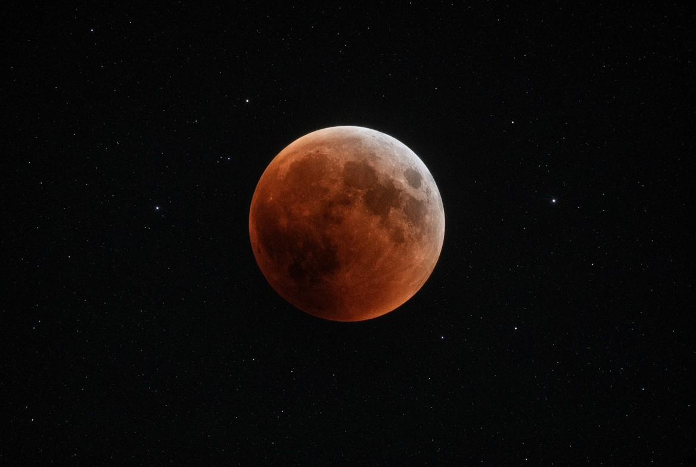
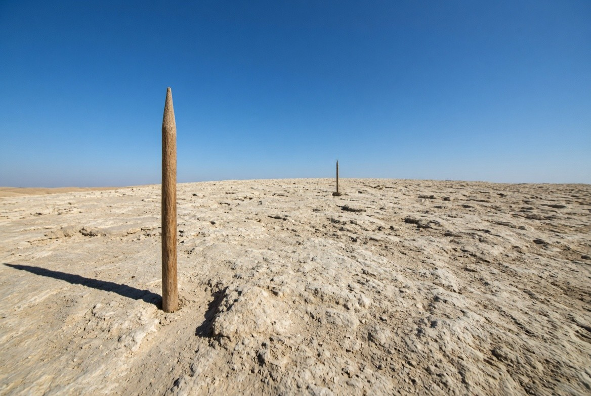
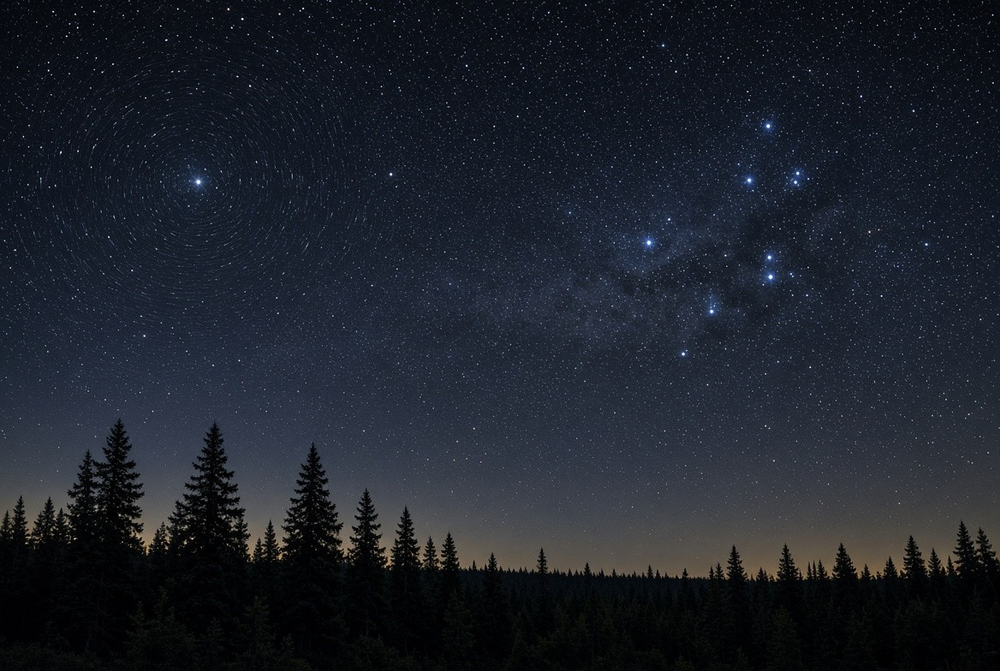
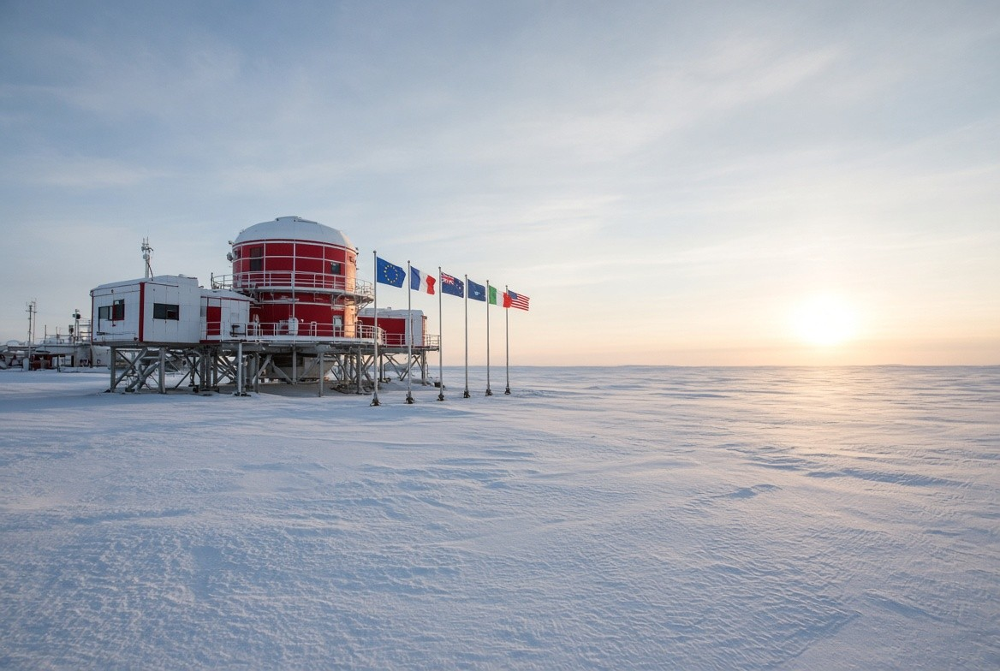
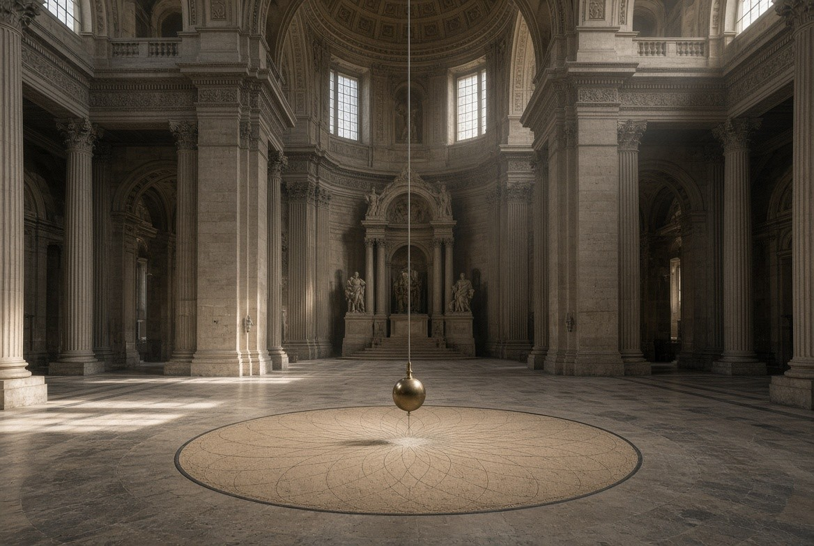
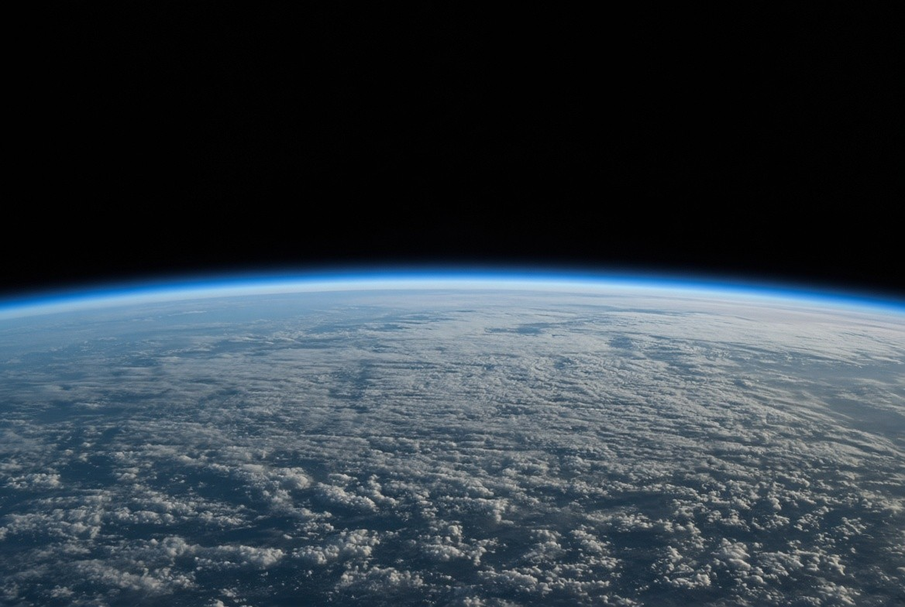
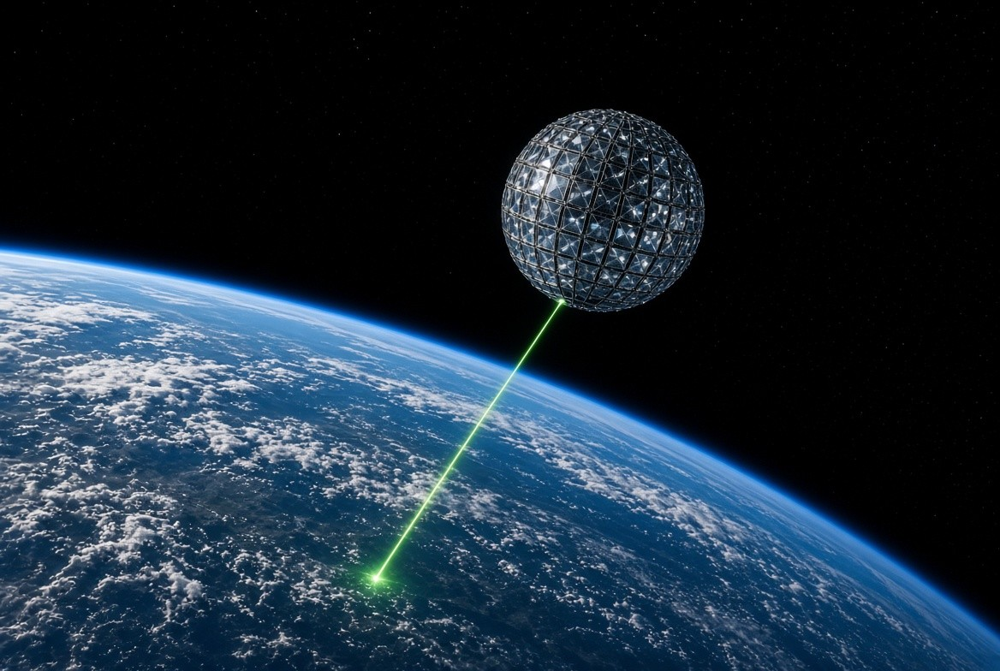

Dossier XXXI · Astronomie & géodésie
La Terre,
à l’épreuve
des mesures.
Une ombre. Un horizon. Une horloge.
Des expériences différentes, un même monde.
Explorez la forme de notre planète, refaites les calculs et confrontez chaque affirmation à ce qu’elle prédit.

Expérimenter le globe · 4 réglages
Faites glisser pour explorer · Modèle géométrique, échelles explicites.
Rayon équatorial WGS 84
Un tour par rapport aux étoiles
Aplatissement de l’ellipsoïde
Manipuler, calculer, comparer
L’itinéraire
Une question.
Plusieurs façons de mesurer.
Choisissez votre point d’entrée. Les expériences restent accessibles à chaque niveau de lecture.
Une ombre suffit
pour commencer.
Gnomons, horizon et ciel : des expériences à refaire.
Du terrain au modèle ↗02 — COMPRENDRELe mouvement
laisse des traces.
Marées, orbites, horloges et lasers racontent la même planète.
Ouvrir la boîte à outils ↗03 — VÉRIFIERUne affirmation
doit prédire.
Comparez les résultats attendus et cherchez les sources.
Mettre les objections à l’épreuve ↗Explorer les 24 chapitres +
Le fil des preuves
Commencez par ce qui s’observe : les ombres, l’horizon et le ciel. Passez ensuite aux mesures qui révèlent la rotation et la forme : pendule, orbites, horloges et laser. Terminez par les objections et leurs protocoles.
Un schéma explique un modèle. Une illustration synthétique n’est pas une observation. Les résultats des ateliers sont des calculs : les sources permettent de les comparer à des mesures réelles.
La forme que l’on mesure
Phrase simple. Dans l’hémisphère nord, l’altitude du pôle céleste diminue d’environ un degré par 111 km parcourus vers le sud. La Polaire est proche de ce pôle : elle donne une latitude approximative, à corriger de son petit écart au pôle et de la réfraction.
Terme exact. Ellipsoïde de révolution oblate comme surface géométrique de référence (WGS 84 pour le GPS). Le géoïde est une équipotentielle du champ de pesanteur proche du niveau moyen des mers ; il ne décrit pas toute la topographie.
Piège. « Ronde » n’est pas « sphère parfaite ». Les composites NASA 2002/2012 n’annulent pas un cliché argentique de 1972 ni un scan Himawari de 10 minutes.
Approfondissement — pourquoi un disque éclairé par un « projecteur » casse dès la première nuit
Phrase simple : au même instant, quelqu’un a le Soleil au zénith et quelqu’un d’autre est dans le noir. La sphère éclairée par un Soleil lointain prédit une moitié jour et une moitié nuit. Un modèle de Soleil proche doit expliquer simultanément les couchers, les tailles apparentes et les horaires observés ; un simple projecteur ne suffit pas.
Observation
Les fuseaux horaires civils sont des conventions administratives ; l’alternance du jour et de la nuit et le midi solaire suivent la rotation terrestre. Ils collent à une rotation sidérale de période
Se lit : « période sidérale égale quatre-vingt-six mille cent soixante-quatre virgule zéro neuf zéro cinq secondes ».
Ce qu’elle dit
Une rotation sidérale ramène un méridien face aux mêmes étoiles. Elle dure un peu moins de 24 heures car la Terre avance aussi sur son orbite solaire.
Les symboles. Survolez la formule ou un symbole.
- T_{\mathrm{sid}} durée d’une rotation terrestre par rapport aux étoiles seconde (s) ≈ 86 164,0905 s
Sens novice : un tour par rapport aux étoiles dure un peu moins que 24 h d’horloge civile (jour solaire moyen = 86400 s), parce que la Terre a aussi avancé sur son orbite.
Calcul déroulé — vitesse linéaire à l’équateur
- Rayon équatorial WGS 84 : a = 6\,378\,137\,\mathrm{m}.
- Circonférence : C = 2\pi a = 2\pi \times 6\,378\,137 = 40\,075\,017\,\mathrm{m}.
- Vitesse : v = C / T_{\mathrm{sid}} = 40\,075\,017 / 86164{,}0905 \approx 465{,}1\,\mathrm{m\,s^{-1}} soit 1\,674\,\mathrm{km\,h^{-1}}.
- Dans l’approximation sphérique, à la latitude \varphi, le rayon du parallèle est a\cos\varphi, donc v(\varphi)=465{,}1\cos\varphi. À Paris \varphi\approx48{,}87^\circ, v\approx306\,\mathrm{m\,s^{-1}}.
Un platiste qui dit « on devrait sentir 1 600 km/h » mélange vitesse et accélération. Ce qu’on sent, c’est l’accélération, pas la vitesse constante. L’accélération centripète à l’équateur :
Se lit : « accélération centripète égale oméga au carré fois R, environ zéro virgule zéro trois quatre mètres par seconde au carré, soit trois millièmes de gé ».
Ce qu’elle dit
À l’équateur, la rotation impose une accélération centripète proportionnelle au rayon et au carré de la vitesse angulaire. Elle reste petite devant la pesanteur ; une vitesse constante n’est pas en elle-même une accélération ressentie.
Les symboles. Survolez la formule ou un symbole.
- a_c accélération centripète liée à la rotation à l’équateur mètre par seconde carrée (m/s²) ≈ 0,0339 m/s²
- \omega vitesse angulaire de rotation terrestre radian par seconde (rad/s) ≈ 7,292115 × 10⁻⁵ rad/s
- R rayon terrestre du modèle sphérique mètre (m) ≈ 6 371 km ; employer une unité commune à toutes les longueurs
- T_{\mathrm{sid}} durée d’une rotation terrestre par rapport aux étoiles seconde (s) ≈ 86 164,0905 s
- a rayon équatorial de référence terrestre mètre (m) WGS 84 : 6 378 137 m
- g accélération gravitationnelle locale mètre par seconde carrée (m/s²) ≈ 9,8 m/s² à la surface terrestre
C’est mesurable (pesanteur un peu plus faible à l’équateur que la seule contribution du renflement), pas « sentable » comme un freinage de voiture.
Atelier — fuseau et vitesse selon la latitude
Tableau — grandeurs d’ouverture (ne pas survoler)
| Grandeur | Valeur | Source |
|---|---|---|
| a (équateur) | 6 378 137 m | WGS 84 / NGA |
| b (polaire) | 6 356 752,314 m | WGS 84 |
| GM | 3,986004418×10¹⁴ m³ s⁻² | IERS / WGS 84 |
| T sidéral | 86 164,0905 s | IERS |
| ε obliquité J2000 | 23° 26′ 21,406″ | IAU 2006 |
Pour vérifier : NGA — WGS 84.
Deux ombres, une circonférence

| Date | Acteur / lieu | Fait |
|---|---|---|
| vers 430 AEC | Empédocle, Anaxagore | Ombre terrestre sur la Lune toujours circulaire. |
| vers 350 AEC | Aristote, Du ciel | Ombre, étoiles selon latitude, analogie des astres. |
| vers 240 AEC | Ératosthène, Alexandrie / Syène | 1/50 de cercle, 5 000 stades → 250/252 000 stades. |
| vers 150 EC | Ptolémée, Almageste I.4 | Navires, coque d’abord. |
| 827–833 | al-Maʾmūn / Banū Mūsā | Mesure d’un degré de méridien. |
| v. 1230 | Sacrobosco, De sphaera | Manuel médiéval standard : Terre sphérique. Le mythe « Moyen Âge plat » est une invention du XIXe (Washington Irving sur Colomb). |
| 1519–22 | Magellan / Elcano | Surface fermée, pas de bord. |
| 1736–44 | Maupertuis / La Condamine | Aplatissement polaire, Newton confirmé. |
| 1851 | Foucault, Panthéon | Rotation ∝ sin(latitude). |
| 1870 | Wallace, Bedford Level | Réfraction contrôlée : courbure visible. |
| 7 déc. 1972 | Apollo 17 AS17-148-22727 | Single-frame argentique ~29 400 km. |
| 1976 / 1992 / 2012 / 2022 | LAGEOS, LARES | Laser millimétrique + frame-dragging. |
| 2015 | DSCOVR-EPIC, L1 | Disque éclairé toutes les 60–100 min. |

Approfondissement — Ératosthène pas « en résumé » : protocole, nombres, incertitudes
Il ne « savait que la Terre est ronde ». Il a mesuré une taille. Le récit complet est chez Cléomède, Caelestia I.10, pas dans un tweet.
Données qu’il pose
- À Syène (Assouan), solstice d’été, midi solaire local : gnomon sans ombre (Soleil au zénith). Syène est près du tropique du Cancer.
- À Alexandrie, même instant astronomique (midi local n’est pas le même en temps universel, mais l’écart de longitude est petit) : zénith distance \theta = 1/50 de cercle = 7{,}2^\circ.
- Distance des bématistes : d = 5\,000 stades.
Géométrie — pourquoi l’angle d’ombre = angle au centre
Les rayons solaires sont traités comme parallèles (Soleil très loin). Deux verticales (vers le centre de la sphère) forment un angle \theta égal à la différence de latitude. D’où la proportion :
Se lit : « C égale d fois trois cent soixante sur thêta. Cinq mille fois cinquante égale deux cent cinquante mille stades ».
Ce qu’elle dit
Des rayons solaires presque parallèles permettent de relier la différence des angles zénithaux à l’angle entre les verticales. La distance entre les sites représente alors la même fraction d’un méridien que l’angle représente d’un tour.
Les symboles. Survolez la formule ou un symbole.
- \theta différence d’angle zénithal, égale à l’angle au centre dans le modèle degré (°) convertir en radians si une fonction trigonométrique l’exige
- d distance méridienne entre les deux sites d’observation mètre (m), ou stade dans le calcul antique employer la même unité que la circonférence
- C circonférence terrestre mesurée le long du méridien mètre (m) dans le calcul antique, exprimée en stades
Tradition parallèle : 252 000 stades (divisible par 60). Le stade égyptien souvent pris à 157{,}5\,\mathrm{m} donne C \approx 39\,375\,\mathrm{km}. Le méridien moderne WGS 84 vaut 40\,007{,}863\,\mathrm{km}. Écart typique de quelques pourcents — et les hypothèses (Syène pile au tropique, même méridien qu’Alexandrie) ne sont pas exactes au kilomètre près.
Ce que le calcul refuse
Si le sol est plat et le Soleil proche, l’angle d’ombre dépend de la hauteur du Soleil et de la distance horizontale, pas d’une fraction fixe de 360°. Deux villes séparées de 800 km sur un disque avec un Soleil à 5 000 km d’altitude n’ont pas un rapport simple « 1/50 du monde ». Deux mesures d’ombre seules peuvent aussi être ajustées par un Soleil proche au-dessus d’un plan. Pour départager les modèles, il faut davantage de lieux et des prédictions communes, ou une contrainte indépendante sur la distance solaire.
Chaîne historique (à dérouler à l’antenne, dates)
Aristote (Du ciel II.14) : ombre terrestre ronde sur la Lune + changement des étoiles avec la latitude. Ératosthène ~240 AEC. Posidonius via les hauteurs de Canopus. Al-Bīrūnī XIe s. : méthode de la montagne et de la dépression d’horizon. Picard 1669-70 : triangulation de la méridienne. Delambre–Méchain : mètre. Everest, Struve, puis WGS 84 / ITRF.
Atelier — reconstruire C en changeant le stade et l’angle
Tableau — mesures historiques de C, pas une liste d’honneur
| Acteur | Époque | Méthode | Ordre de C |
|---|---|---|---|
| Ératosthène | ~240 AEC | gnomons + stades | 250–252×10³ stades |
| Posidonius | Iᵉ s. AEC | hauteur de Canopus | variable selon stade |
| Al-Bīrūnī | XIᵉ s. | dépression d’horizon | ~6335 km de rayon |
| Picard | 1669-70 | triangulation | méridien précisé |
| WGS 84 | 1984– | SLR+VLBI+GNSS | 40 075,017 km équateur |
Pour vérifier : Library of Congress — la Terre sphérique dans les traités médiévaux.
Atelier — deux modèles, trois lieux
Voici des observations simulées pour une sphère, au midi solaire d’un équinoxe, sur un même méridien. Le premier site est à l’équateur. Sur le modèle plan, le Soleil est placé à sa verticale pour conserver son angle nul. Essayez de faire coïncider les deux autres angles avec une seule hauteur solaire.
| Site | Distance du site 1 | Angle sphère simulé | Angle plan prédit |
|---|
Hypothèses explicites : rayons parallèles pour la sphère ; sol plan et Soleil ponctuel à hauteur fixe pour le second modèle. Les distances de ce méridien sont conservées dans les deux modèles. Cette simulation illustre une méthode de discrimination ; elle n’est pas une nouvelle mesure historique.
La naissance du platisme moderne

Phrase simple. La Terre sphérique est documentée dans les traditions savantes grecques, puis dans de nombreux travaux indiens et arabes. Les cosmologies chinoises anciennes sont diverses. Le platisme que tu croises sur YouTube n’est pas « l’avis antique ». C’est un produit victorien, puis une marque associative, puis un mème.
Ce que les Anciens faisaient vraiment
Des cosmologies du Proche-Orient décrivent un disque sous un dôme — textes mythiques, pas des campagnes de mesure. Dès le Ve siècle AEC, la sphère devient le modèle savant méditerranéen. Au Moyen Âge latin, De sphaera de Sacrobosco est un best-seller universitaire. L’Église savante (Bède, Thomas d’Aquin) enseigne une Terre ronde. Le « Colomb contre les plats du clergé » est un roman de Washington Irving (1828), pas une archive.
La bascule du XIXe
- Samuel Birley Rowbotham (1816–1884), alias Parallax. Expérience du Bedford Level sans correction de réfraction. Pamphlet puis livre Zetetic Astronomy: Earth Not a Globe (éd. étendue 1881). Disque centré pôle Nord, Antarctique = mur de glace, Soleil et Lune à ~5 000 km.
- Méthode « zététique ». Mot grec pour « chercher ». Chez Rowbotham, ça veut dire : ne garder que ce que l’œil croit voir au ras de l’eau, et traiter toute optique, toute géodésie, toute astronomie de position comme une caste. Ce n’est pas une méthode scientifique : une méthode scientifique publie l’erreur systématique (ici la réfraction).
- Lady Elizabeth Blount, Universal Zetetic Society, après 1884. Relais biblique littéraliste + conférences.
- Zion (Illinois), John Alexander Dowie puis Wilbur Glenn Voliva : théocratie locale qui enseigne le disque jusque vers 1942.
Approfondissement — d’où vient le platisme moderne, sans survol
L’Antiquité savante n’est pas « restée plate ». Le platisme de salon du XIXe est une reconstruction récente, pas une tradition ininterrompue.
Samuel Birley Rowbotham (1816–1884)
Sous le nom « Parallax », il publie Zetetic Astronomy: Earth Not a Globe (1881 pour l’édition longue). Expérience-phare : Bedford Level, canal drainé du Cambridgeshire. Il vise une marque à 6 miles et conclut « pas de courbure ». Ce qu’il ne contrôle pas : réfraction rase au-dessus de l’eau chaude/froide, hauteur d’œil, résolution de la lunette.
Formule platiste encore recopiée : « 8 inches per mile squared ». En SI :
Se lit : h vaut approximativement huit pouces multipliés par le carré de la distance exprimée en miles. Pour convertir huit pouces en miles, on divise huit par douze fois cinq mille deux cent quatre-vingts.
Ce qu’elle dit
Le slogan de huit pouces par mile carré convertit une approximation locale de la courbure sphérique dans des unités anglo-saxonnes. Il décrit l’écart à une tangente, sans suffire à calculer ce qu’un observateur peut voir.
Les symboles. Survolez la formule ou un symbole.
- h écart vertical à la tangente locale mètre (m) ne représente pas directement la hauteur masquée pour un observateur surélevé
- d distance horizontale mesurée dans le plan tangent local mètre (m) petite devant le rayon terrestre ; ce n’est pas ici une distance laser
C’est une approximation de h = d^2/(2R) avec R \approx 3959\,\mathrm{mi}, parce que 1/(2\times3959)\,\mathrm{mi} \approx 8\,\mathrm{in}. Donc le slogan platiste est… la formule de la sphère, mal utilisée (ils oublient souvent la hauteur d’œil et la réfraction).
Se lit : « h égale d au carré sur deux R ».
Ce qu’elle dit
L’écart de la surface à sa tangente croît approximativement comme le carré de la distance. Cette expression demande une distance petite devant le rayon terrestre et ne tient pas compte de la hauteur des yeux.
Les symboles. Survolez la formule ou un symbole.
- h écart vertical à la tangente locale mètre (m) ne représente pas directement la hauteur masquée pour un observateur surélevé
- d distance horizontale mesurée dans le plan tangent local mètre (m) petite devant le rayon terrestre ; ce n’est pas ici une distance laser
- R rayon terrestre du modèle sphérique mètre (m) ≈ 6 371 km ; employer une unité commune à toutes les longueurs
Exemple déroulé : d = 10\,\mathrm{km}, h = 100 / (2\times6371) = 0{,}00785\,\mathrm{km} = 7{,}85\,\mathrm{m}. À 6 miles (9{,}66\,\mathrm{km}), drop ≈ 7,3 m — visible si tu sors la visée de la couche réfractive, ce que fait Alfred Russel Wallace en 1870 avec des jalons hauts et un niveau intermédiaire. Wallace gagne le pari de John Hampden. Hampden le harcèle ensuite (courriers, diffamation) : ce n’est plus de la mesure, c’est du conflit.
Carte AE (azimuthal equidistant, pôle Nord au centre)
Distance depuis le pôle : r = R(\pi/2-\varphi). Un parallèle de latitude \varphi a, sur le globe, la longueur 2\pi R\cos\varphi. Sur la carte AE, c’est 2\pi R(\pi/2-\varphi). Facteur d’étirement est-ouest :
Se lit : « k égale pi sur deux moins phi, sur cosinus de phi ».
Ce qu’elle dit
Une carte azimutale équidistante polaire conserve les distances radiales depuis son centre. Son étirement est-ouest augmente fortement vers les latitudes australes ; ce défaut de projection ne démontre pas à lui seul une forme physique.
Les symboles. Survolez la formule ou un symbole.
- k facteur local d’étirement est-ouest sur la projection azimutale équidistante polaire sans unité une projection ne conserve pas toutes les distances
- \varphi latitude du lieu radian (rad) positive au nord, négative au sud ; une latitude en degrés doit être convertie pour les calculs
À \varphi=0 (équateur), k=\pi/2\approx1{,}57. À Sydney \varphi=-33{,}9^\circ, k\approx2{,}61. À \varphi=-70^\circ, k\approx8{,}16. Les vols australiens (Sydney–Santiago, Perth–Johannesburg) durent ce que le globe prévoit, pas le double AE. C’est un test quotidien, pas une opinion.
Atelier — étirement d’un parallèle dans la projection AE
Tableau — textes fondateurs du platisme moderne
| Texte | Date | Auteur | Affirmation centrale testable |
|---|---|---|---|
| Zetetic Astronomy | 1881 | Rowbotham | Bedford « sans courbure » |
| Earth Not a Globe (tracts) | 1849+ | Parallax | Soleil proche |
| Flat Earth News | 1970s–90s | C. K. Johnson | NASA mensonge |
| Forums / YouTube | 2014– | divers | dôme, CGI, mur |
Pour vérifier : USGS — projections et leurs distorsions.
La Flat Earth Society
| Date | Qui | Fait vérifié |
|---|---|---|
| 1956 | Samuel Shenton (1903–1971), peintre en lettres à Dover | Fonde l’International Flat Earth Research Society, se présente comme héritier de l’Universal Zetetic Society. La société présente cette date dans son histoire publique ; la notice de catalogue des archives doit être consultée avant toute citation précise du fonds. |
| années 1960 | Shenton | Médiatisé pendant la course spatiale. Face aux photos orbitales : « mauvais angle » puis « trucage ». |
| 1971–72 | Charles K. Johnson (1924–2001) et Marjory, Lancaster / désert des Mojaves | Reprend la société après la mort de Shenton. Newsletters « Restoring the World to Sanity ». Effectif souvent cité ~3 000 à 3 500 au pic, ~100 à la mort de Johnson. |
| 1984 | Johnson à Newsweek | « If earth were a ball spinning in space, there would be no up or down. » — confond vitesse et accélération, haut et bas locaux. |
| 2001 | — | Mort de Johnson, société quasi éteinte. |
| 2004+ | Daniel Shenton (homonyme, pas une filiation prouvée) | Reprise du nom sur Internet, ligne moins religieuse. |
| 2014–2017 | YouTube / forums | Vague Eric Dubay (« 200 proofs »), Mark Sargent, conférences. Le documentaire Behind the Curve (2018) filme des expériences de militants qui retrouvent… la courbure, puis changent d’explication. |
- Présenter le disque comme « ce que tout le monde croyait avant NASA » — faux dès −240.
- Traiter Bedford 1838 comme une preuve alors que Wallace 1870, avec la réfraction contrôlée, inverse le résultat.
- Qualifier toute photo spatiale de CGI tout en ignorant GOES, Himawari, Météosat, Elektro-L, ballons lycée, radio ISS.
- Transformer le traité de l’Antarctique (1959, démilitarisation) en « interdiction d’approcher le bord ».
- Utiliser une carte AE (projection vraie depuis UN point) comme si c’était le planisphère physique.

Approfondissement — International Flat Earth Society, chronologie sourcée
Ce n’est pas une académie. C’est une succession d’associations, de ruptures et de relances web.
- 1956 — Samuel Shenton relance une société à Douvres à partir du legs de l’Universal Zetetic Society (héritière de Rowbotham / Lady Blount).
- 1971 — mort de Shenton. Charles K. Johnson (Californie) prend le relais, newsletter Flat Earth News. Johnson meurt en 2001. La société historique s’éteint de fait.
- 2004 puis 2009 — Daniel Shenton (homonyme, pas parenté claire avec Samuel) relance un site et un forum. Le nom circule à nouveau.
- 2014–2018 — bascule YouTube / conférences US (Mark Sargent, Eric Dubay, etc.). Le contenu n’est plus celui de Johnson mot pour mot : on greffe NASA-CGI, dôme, Antarctique interdit, « 200 preuves ».
Le « mur de glace » face aux nombres
Sur la carte AE, l’Antarctique devient un anneau. Circonférence de l’anneau si le « bord » est à la latitude \varphi_b :
Se lit : L indice A E égale deux pi fois R, multiplié par pi sur deux moins phi indice b. La latitude est ici exprimée en radians.
Ce qu’elle dit
Sur cette projection polaire, un parallèle austral devient un cercle dont le rayon est sa distance depuis le pôle Nord. La longueur de ce cercle projeté ne doit pas être confondue avec le périmètre du littoral antarctique.
Les symboles. Survolez la formule ou un symbole.
- L_{\mathrm{AE}} circonférence du parallèle sur la projection azimutale équidistante polaire mètre (m) ne correspond pas au périmètre du littoral antarctique
- R rayon terrestre du modèle sphérique mètre (m) ≈ 6 371 km ; employer une unité commune à toutes les longueurs
- \varphi_b latitude du parallèle choisi comme bord du disque projeté radian (rad) négative au sud ; ce parallèle n’est pas le littoral antarctique
Pour un mur à 70^\circ\mathrm{S}, L_{\mathrm{AE}} \approx 2\pi\times6371\times(1{,}5708+1{,}2217) \approx 112\,000\,\mathrm{km}. Ce parallèle fictif n’est pas le littoral antarctique. Le périmètre d’un parallèle sur le globe se calcule avec le cosinus de sa latitude ; la côte réelle dépend du tracé et de l’échelle de mesure. Les stations (McMurdo, Concordia, Amundsen-Scott, Davis, Zhongshan…) fonctionnent toute l’année ou en campagne, avec logistique publiée (COMNAP, NSF USAP, IPEV). Le traité de 1959 n’interdit pas d’y aller : il encadre les revendications souveraines et la science.
Nuit polaire au pôle Sud : le Soleil disparaît ~6 mois. À Concordia, la nuit polaire dure plusieurs mois, pas six : l’ESA décrit trois mois en 2013. Un modèle de Soleil proche au-dessus d’une carte AE doit prédire les trajectoires et durées observées ; une projection géographique seule n’en donne aucune.
Atelier — le même parallèle sur une carte AE et sur le globe
Tableau — chronologie FES
| Date | Fait | Source de datation |
|---|---|---|
| 1893 | Universal Zetetic Society (Lady Blount) | publications zététiques UK |
| 1956 | Shenton relance à Douvres | correspondance / presse locale |
| 1971–2001 | ère Johnson, Californie | Flat Earth News |
| 2004-2009 | relance web D. Shenton | forum / site |
| 2014-2018 | vague vidéo | plateformes publiques |
Les personnes et leurs mesures
| Nom | Rôle | Camp |
|---|---|---|
| Ératosthène, Aristote, Ptolémée, al-Maʾmūn | Mesure / synthèse | chercheurs |
| Newton, Maupertuis, Clairaut, Foucault, Wallace | Forme + rotation | chercheurs |
| Hafele & Keating, équipes ILRS / NASA GSFC / ASI | Horloges, laser | institutions |
| Rowbotham, Blount, Voliva, Shenton, C. K. Johnson | Doctrine disque | antox |
| Dubay et relais YouTube 2014+ | Compilation de « preuves » déjà réfutées au XIXe | antox |
Approfondissement — personnes, rôles, ce qu’elles ont vraiment mesuré
Une mesure n’existe pas « en général ». Elle a un nom, un instrument, une date, une incertitude.
- Ératosthène de Cyrène (~276–194 AEC), Musée d’Alexandrie — angle + distance, circonférence.
- Al-Bīrūnī (973–1050), Khwarezm — dépression d’horizon depuis une montagne, rayon.
- Jean Picard (1620–1682) — triangulation Amiens–Malvoisine, 1669-70, rayon précisé.
- Léon Foucault (1819–1868) — 31 mars 1851, Panthéon, pendule 67 m, rotation terrestre visible en salle.
- Alfred Russel Wallace (1823–1913) — Bedford 1870, protocole anti-réfraction.
- Friedrich Bessel, George Everest, Struve — arcs de méridien au XIXe.
- Joseph C. Hafele, Richard E. Keating — octobre 1971, césium à bord de vols commerciaux, Science 14 juillet 1972.
- Équipes ILRS / NASA GSFC / ASI / GFZ — LAGEOS-1 1976, LAGEOS-2 1992, ranging millimétrique.
Côté platiste documenté : Rowbotham, Lady Elizabeth Blount (Universal Zetetic Society, 1893), Samuel Shenton, Charles K. Johnson, Daniel Shenton. Leurs textes sont publics. On les lit, on les teste, on ne les « interdit » pas : ils échouent aux tests.
Atelier — relier la personne au nombre
Clique la bonne mesure pour Foucault (1851).
Tableau — personne / observable / incertitude
| Personne | Observable | Ordre d’incertitude |
|---|---|---|
| Ératosthène | C | quelques % |
| Foucault 1851 | Ω sinφ | visuel en minutes |
| Hafele–Keating | Δτ | ±7 à ±10 ns |
| ILRS LAGEOS | ρ | mm |
Un réseau mondial de mesures
IUGG / IAG / IERS (ITRF), NGA (WGS 84), IGN-CNES (RGP, DORIS, SLR), NASA/NOAA (EPIC, GRACE), ESA/EUMETSAT (Météosat), JAXA/JMA (Himawari), ASI (LARES), USNO (échelle de temps de Hafele–Keating). Un disque unique exigerait que des États rivaux falsifient les mêmes orbites pendant 70 ans — et que les radioamateurs se trompent du même nombre de kHz.
Approfondissement — qui mesure quoi aujourd’hui (institutions, pas « la NASA »)
Un platiste dit « c’est la NASA ». Le réseau réel est multi-pays, multi-techniques, et les jeux de données sont comparés entre eux.
- IERS — International Earth Rotation and Reference Systems Service. Paramètres de rotation (UT1, mouvement du pôle), ITRF.
- IGN / GRGS / CNES — gravimétrie, DORIS, orbites.
- ILRS — International Laser Ranging Service, ~40 stations SLR actives, LAGEOS, LARES, etc.
- IGS — GNSS global (GPS, Galileo, GLONASS, BeiDou).
- NGA — WGS 84, mise à jour EGM gravimétrique.
- BIPM — temps atomique TAI, UTC.
- Observatoires — VLBI (géodésie millimétrique par quasars).
ITRF n’est pas une photo : c’est un ajustement de millions d’observations SLR + VLBI + GNSS + DORIS. Si la Terre était un disque, ces quatre techniques divergeraient. Elles coïncident au centimètre, souvent mieux.
Précession des équinoxes : 50{,}3''/\mathrm{an}, période ~25 772 ans. Calculable par le couple luni-solaire sur le bourrelet J_2. La précession doit être expliquée quantitativement par le modèle retenu.
Atelier — quelle technique parle à quelle observable ?
Le temps de vol d’une impulsion laser aller-retour vers LAGEOS, c’est :
Tableau — réseau vivant
| Service | Mesure | Lien |
|---|---|---|
| IERS | rotation, ITRF | https://www.iers.org/ |
| ILRS | SLR | https://ilrs.gsfc.nasa.gov/ |
| IGS | GNSS | https://igs.org/ |
| BIPM | TAI / UTC | https://www.bipm.org/ |
| NGA | WGS 84 | https://earth-info.nga.mil/ |
Observer, mesurer, reproduire
Ératosthène (ombres), navire/phare, Bedford contrôlé, Foucault / gyrolaser, Doppler ISS, SLR LAGEOS, altimétrie Jason, ballon-sonde lycée. Protocoles dans les ateliers.


Approfondissement — chaque expérience, protocole et calcul, pas le titre
1. Disparition coque-en-premier
Hauteur d’œil h, distance d’horizon géométrique (sans réfraction) :
Se lit : « d égale racine carrée de deux R h plus h au carré, à peu près racine carrée de deux R h ».
Ce qu’elle dit
La ligne de visée vers l’horizon est tangente à la sphère terrestre. Le théorème de Pythagore donne la distance rectiligne de l’œil au point de tangence ; l’approximation suppose une hauteur petite devant le rayon.
Les symboles. Survolez la formule ou un symbole.
- d distance rectiligne de l’œil au point de tangence de l’horizon mètre (m) proche de la distance au sol pour les faibles hauteurs
- R rayon terrestre du modèle sphérique mètre (m) ≈ 6 371 km ; employer une unité commune à toutes les longueurs
- h hauteur de l’œil ou de l’horloge au-dessus de la surface de référence mètre (m) petite devant le rayon terrestre
Numérique : h=2\,\mathrm{m}, R=6{,}371\times10^6\,\mathrm{m}, d=\sqrt{2\times6{,}371\times10^6\times2}\approx 5\,048\,\mathrm{m}. La distance à l’horizon vaut ici environ 5,048 km. À 12 km, avec un œil à 2 m, la hauteur masquée est d’environ 3,8 m dans ce modèle sans réfraction. Jumelles : le mât reste, la coque part. Sur un plan idéal sans obstacle ni réfraction, la perspective seule rétrécit l’objet sans occulter géométriquement sa base. Une observation réelle exige de contrôler aussi les vagues, la réfraction et la résolution.
2. Réfraction — ne pas se faire piéger comme à Bedford
Exemple de coefficient de réfraction k ≈ 0,13, sous hypothèse d’un gradient constant : rayon effectif R' = R/(1-k) \approx 1{,}15 R. Dans cet exemple, l’horizon s’éloigne un peu. Les gradients réels varient et peuvent créer des mirages. Des jalons hauts réduisent certains biais de visée rase sans supprimer toute réfraction ; il faut comparer plusieurs visées et relever les conditions atmosphériques. Un seul « j’ai vu le disque » au ras de l’eau n’est pas une mesure.
3. Pendule de Foucault — période du plan
Se lit : T indice p égale deux pi divisés par oméga fois la valeur absolue du sinus de phi, soit vingt-trois virgule neuf trois quatre heures divisées par la valeur absolue du sinus de phi. La période est positive dans les deux hémisphères ; le sens de précession change.
Ce qu’elle dit
La précession du plan d’oscillation dépend de la composante verticale de la rotation terrestre. Sa période augmente vers l’équateur, où la précession idéale s’annule ; la durée utilise la valeur absolue du sinus.
Les symboles. Survolez la formule ou un symbole.
- T_p période de précession du plan du pendule de Foucault heure (h) la durée physique est positive : utiliser la valeur absolue du sinus ; infinie à l’équateur
- \Omega vitesse angulaire de rotation terrestre radian par seconde (rad/s) ≈ 7,292115 × 10⁻⁵ rad/s, soit 15,041°/h
- \varphi latitude du lieu radian (rad) positive au nord, négative au sud ; une latitude en degrés doit être convertie pour les calculs
Paris \varphi=48{,}846^\circ, \sin\varphi=0{,}753, T_p \approx 31{,}8\,\mathrm{h}. Au pôle : 23,93 h. À l’équateur : le plan ne tourne pas. Un pendule adapté permet de tester cette loi ; les courants d’air, la suspension et les défauts de lancement doivent être maîtrisés. Le sens s’inverse dans l’hémisphère sud ; la période positive utilise la valeur absolue du sinus de la latitude.
4. Ballon / drone / sommet
Flèche au milieu d’une corde joignant deux points distants d : l’altitude de l’observateur H ne fixe pas cette flèche ; la corde s’écarte de l’arc d’environ d^2/8R. À 10 km d’altitude, horizon ~357 km, courbure subtile qui doit être mesurée sur une photo calibrée (pas un GoPro déformé sans correction).
Atelier — distance d’horizon selon la hauteur d’œil
Tableau — protocoles reproductibles
| Expérience | Minimum matériel | Prédiction sphère | Prédiction disque |
|---|---|---|---|
| Navire | jumelles + môle | coque d’abord | rétrécit entier |
| Gnomons | 2 bâtons + midi | \theta=\Delta\varphi | θ dépend d’une hauteur de Soleil ad hoc |
| Foucault | fil 5 m + masse | T_p=\frac{23{,}93\,\mathrm{h}}{|\sin\varphi|} | à calculer pour une dynamique explicite ; un plan immobile ne prédit pas la loi de Foucault |
| Horizon | théodolite | d\approx\sqrt{2Rh} | aucune occultation géométrique par courbure ; visibilité néanmoins limitée par l’atmosphère et l’instrument |
Les relations qui font les calculs
Se lit : C égale trois cent soixante degrés sur thêta, fois d
Ce qu’elle dit
Deux sites du même méridien offrent une mesure de la circonférence si l’on connaît leur séparation et leur différence d’angle zénithal. Le modèle suppose un Soleil assez lointain pour traiter ses rayons comme parallèles.
Les symboles. Survolez la formule ou un symbole.
- C circonférence terrestre mesurée le long du méridien mètre (m) dans le calcul antique, exprimée en stades
- \theta différence d’angle zénithal, égale à l’angle au centre dans le modèle degré (°) convertir en radians si une fonction trigonométrique l’exige
- d distance méridienne entre les deux sites d’observation mètre (m), ou stade dans le calcul antique employer la même unité que la circonférence
Se lit : h approximativement d au carré sur deux R
Ce qu’elle dit
À faible distance, l’écart à la tangente est quadratique en distance et inversement proportionnel au rayon. Cette flèche n’est pas la hauteur masquée d’un objet pour un observateur dont les yeux sont au-dessus du sol.
Le slogan platiste « 8 inches per mile squared » est une approximation locale de cette formule, souvent mal convertie et appliquée hors domaine.
Les symboles. Survolez la formule ou un symbole.
- h écart vertical à la tangente locale mètre (m) ne représente pas directement la hauteur masquée pour un observateur surélevé
- d distance horizontale mesurée dans le plan tangent local mètre (m) petite devant le rayon terrestre ; ce n’est pas ici une distance laser
- R rayon terrestre du modèle sphérique mètre (m) ≈ 6 371 km ; employer une unité commune à toutes les longueurs
Se lit : oméga du pendule égale oméga sinus phi
Ce qu’elle dit
Le plan du pendule précesse selon la projection verticale de la rotation terrestre. Le taux s’annule à l’équateur et change de signe entre les hémisphères.
Les symboles. Survolez la formule ou un symbole.
- \Omega_p vitesse angulaire signée de précession du plan du pendule de Foucault radian par seconde (rad/s) nulle à l’équateur ; le sens change entre les hémisphères
- \Omega vitesse angulaire de rotation terrestre radian par seconde (rad/s) ≈ 7,292115 × 10⁻⁵ rad/s, soit 15,041°/h
- \varphi latitude du lieu radian (rad) positive au nord, négative au sud ; une latitude en degrés doit être convertie pour les calculs
Se lit : gé égale constante de Newton fois la masse, sur R au carré
Ce qu’elle dit
Dans le modèle d’une masse sphérique, la gravitation à l’extérieur décroît comme l’inverse du carré de la distance au centre. La pesanteur réellement mesurée inclut aussi la rotation et les variations du champ terrestre.
Les symboles. Survolez la formule ou un symbole.
- g accélération gravitationnelle locale mètre par seconde carrée (m/s²) ≈ 9,8 m/s² à la surface terrestre
- G constante de gravitation universelle mètre cube par kilogramme par seconde carrée (m³/kg/s²) ≈ 6,67430 × 10⁻¹¹ m³/kg/s²
- M masse du corps attracteur kilogramme (kg) Terre dans les formules de pesanteur et de Kepler
- R rayon terrestre du modèle sphérique mètre (m) ≈ 6 371 km ; employer une unité commune à toutes les longueurs
Approfondissement — chaque formule, symboles, unités, exemple chiffré
Chaque formule est accompagnée de sa lecture en français, du sens physique et de ses symboles.
Circonférence d’Ératosthène
Se lit : « C égale d fois trois cent soixante degrés sur thêta ».
Ce qu’elle dit
Le rapport entre distance méridienne et circonférence est le rapport entre angle au centre et angle d’un tour. Toutes les longueurs doivent être exprimées dans une unité commune.
Les symboles. Survolez la formule ou un symbole.
- C circonférence terrestre mesurée le long du méridien mètre (m) dans le calcul antique, exprimée en stades
- d distance méridienne entre les deux sites d’observation mètre (m), ou stade dans le calcul antique employer la même unité que la circonférence
- \theta différence d’angle zénithal, égale à l’angle au centre dans le modèle degré (°) convertir en radians si une fonction trigonométrique l’exige
d distance au sol, \theta différence d’angle zénithal. Usage : taille de la Terre sous hypothèses de sphère, rayons solaires parallèles et distance méridienne.
Tangente et flèche : deux géométries
Se lit : « h approximativement d au carré sur deux R ».
Ce qu’elle dit
Une coupe circulaire fournit l’écart exact entre la surface et une tangente à une distance horizontale donnée. La forme rationalisée rend visible l’approximation quadratique lorsque la distance reste petite devant le rayon.
Les symboles. Survolez la formule ou un symbole.
- h écart vertical à la tangente locale mètre (m) ne représente pas directement la hauteur masquée pour un observateur surélevé
- R rayon terrestre du modèle sphérique mètre (m) ≈ 6 371 km ; employer une unité commune à toutes les longueurs
- d distance horizontale mesurée dans le plan tangent local mètre (m) petite devant le rayon terrestre ; ce n’est pas ici une distance laser
Ici d est une distance horizontale projetée depuis le point de tangence. La flèche au milieu d’une corde entière de longueur d vaut environ d²/(8R), quatre fois moins. L’approximation affichée est valable si d\ll R. À 100 km, l’erreur relative de cette approximation est d’environ 0,006 %.
Pesanteur newtonienne
Se lit : « gé égale constante de Newton fois la masse, sur R au carré ».
Ce qu’elle dit
La partie monopolaire du champ terrestre est fixée par le paramètre gravitationnel GM. Ce calcul sphérique ne comprend ni l’accélération centrifuge ni les harmoniques liées à la distribution des masses.
Les symboles. Survolez la formule ou un symbole.
- g accélération gravitationnelle locale mètre par seconde carrée (m/s²) ≈ 9,8 m/s² à la surface terrestre
- G constante de gravitation universelle mètre cube par kilogramme par seconde carrée (m³/kg/s²) ≈ 6,67430 × 10⁻¹¹ m³/kg/s²
- M masse du corps attracteur kilogramme (kg) Terre dans les formules de pesanteur et de Kepler
- R rayon terrestre du modèle sphérique mètre (m) ≈ 6 371 km ; employer une unité commune à toutes les longueurs
À R=6\,378\,137\,\mathrm{m}, g\approx 9{,}798\,\mathrm{m\,s^{-2}} dans le modèle monopolaire : le calcul donne 9,798285 m/s². Ce n’est pas la pesanteur locale effective ; celle-ci inclut la rotation et les autres termes du champ, dont J_2.
WGS 84 — ellipsoïde
Se lit : f égale a moins b, le tout sur a ; b égale a fois un moins f.
Ce qu’elle dit
L’ellipsoïde WGS 84 décrit un rayon équatorial légèrement supérieur au rayon polaire. L’aplatissement est un rapport sans unité ; il fixe le petit axe à partir du grand axe.
Les symboles. Survolez la formule ou un symbole.
- f aplatissement de l’ellipsoïde terrestre sans unité WGS 84 : 1 / 298,257223563
- a rayon équatorial de référence terrestre mètre (m) WGS 84 : 6 378 137 m
- b demi-petit axe polaire de l’ellipsoïde terrestre mètre (m) WGS 84 : ≈ 6 356 752 m
Aplatissement visible dans les orbites, pas dans une photo Instagram.
Loi des aires / Kepler pour un satellite
Se lit : T au carré égale quatre pi au carré sur G M, fois a au cube.
Ce qu’elle dit
La période d’une orbite képlérienne croît comme le demi-grand axe à la puissance trois demis. Cette relation suppose un problème à deux corps ; la masse du satellite est négligée devant celle de la Terre.
Les symboles. Survolez la formule ou un symbole.
- T période orbitale du satellite seconde (s) loi de Kepler dans l’approximation du problème à deux corps
- G constante de gravitation universelle mètre cube par kilogramme par seconde carrée (m³/kg/s²) ≈ 6,67430 × 10⁻¹¹ m³/kg/s²
- M masse du corps attracteur kilogramme (kg) Terre dans les formules de pesanteur et de Kepler
- a demi-grand axe de l’orbite mètre (m) distance caractéristique mesurée depuis le centre du corps attracteur
LAGEOS a\approx 12\,271\,\mathrm{km}, T\approx 3{,}758\,\mathrm{h}. La relation est la troisième loi de Kepler, dans l’approximation d’un champ central monopolaire ; la loi des aires est la deuxième. Le laser suit l’orbite réelle, avec ses perturbations. Un disque massif possède aussi un terme lointain en 1/r, mais ses corrections de forme doivent reproduire toutes les orbites mesurées.
Atelier — écart sous la tangente, exact et approché
Tableau — formules du dossier, unités SI
| Loi | Expression | Usage |
|---|---|---|
| Ératosthène | C=d\,\frac{360^\circ}{\theta} | taille |
| Sagitta | h=\frac{d^2}{2R} | horizon |
| Foucault | \Omega_p=\Omega\sin\varphi | rotation |
| Newton | g=\frac{GM}{R^2} | pesanteur |
| Marée | a=\frac{2GMR}{r^3} | deux bourrelets |
| J₂ nodal | \dot{\Omega}=-\frac{3}{2}nJ_2\left(\frac{R}{a}\right)^2\cos i | orbites |
| SLR | \Delta t=\frac{2\rho}{c} | LAGEOS |
Marées : la différence de gravité
Phrase simple. Une marée n’est pas « la Lune qui aspire l’eau ». C’est la différence de gravité d’un côté à l’autre de la Terre. Au premier ordre, à taille terrestre fixée et pour un perturbateur lointain, ce gradient varie en 1/r^3, pas en 1/r^2.
Se lit : accélération de marée approximativement deux G M R sur d au cube
Ce qu’elle dit
Les marées résultent des différences d’accélération gravitationnelle à travers la Terre. Au premier ordre sur l’axe du perturbateur, cette différence dépend de sa masse et diminue comme l’inverse du cube de sa distance.
- M masse du perturbateur (Lune ou Soleil)
- R_\oplus rayon terrestre
- d distance centre à centre
Rapport Lune / Soleil ≈ 2,2. Le Soleil est ~27 millions de fois plus massif que la Lune mais ~390 fois plus loin : le cube de 390 mange la masse. D’où vive / morte-eau selon l’alignement (syzygie vs quadrature).
Les symboles. Survolez la formule ou un symbole.
- a_{\mathrm{tid}} différence radiale d’accélération entre le centre terrestre et sa surface due au perturbateur mètre par seconde carrée (m/s²) terme de premier ordre en rayon terrestre / distance
- G constante de gravitation universelle mètre cube par kilogramme par seconde carrée (m³/kg/s²) ≈ 6,67430 × 10⁻¹¹ m³/kg/s²
- M masse du perturbateur, Lune ou Soleil kilogramme (kg) la différence de distance explique la prédominance du gradient lunaire
- R_\oplus rayon terrestre mètre (m) ≈ 6 371 km
- d distance entre le centre terrestre et le centre du perturbateur mètre (m) très supérieure au rayon terrestre
Atelier marées · qui gagne, Lune ou Soleil ?
Approfondissement — marées, gradient 1/r^3, deux bourrelets, rapport Lune/Soleil
La mer ne « monte vers la Lune » comme un aimant. Elle s’allonge parce que la face proche est plus attirée que le centre, et le centre plus que la face loin. Dans le modèle d’équilibre, cela produit deux renflements opposés. Les marées réelles sont des ondes modifiées par les continents, les profondeurs et les résonances des bassins.
Accélération de marée à une extrémité de l’axe Terre–Lune, relative au centre terrestre : la différence entre les deux extrémités du diamètre est environ deux fois plus grande.
Se lit : « accélération de marée approximativement deux fois G M sur r au cube, fois R ».
Ce qu’elle dit
Le gradient de gravitation produit une accélération différentielle sur l’échelle du rayon terrestre. Cette estimation ne prédit pas à elle seule la hauteur locale des marées, qui dépend de la dynamique des bassins.
Les symboles. Survolez la formule ou un symbole.
- a_{\mathrm{tide}} accélération différentielle radiale de marée mètre par seconde carrée (m/s²) premier ordre en rayon terrestre / distance au perturbateur
- G constante de gravitation universelle mètre cube par kilogramme par seconde carrée (m³/kg/s²) ≈ 6,67430 × 10⁻¹¹ m³/kg/s²
- M masse du perturbateur, Lune ou Soleil kilogramme (kg) la différence de distance explique la prédominance du gradient lunaire
- r distance entre le centre terrestre et le centre du perturbateur mètre (m) le gradient de marée diminue comme son inverse au cube
- R rayon terrestre du modèle sphérique mètre (m) ≈ 6 371 km ; employer une unité commune à toutes les longueurs
Lune : M_L=7{,}342\times10^{22}\,\mathrm{kg}, r_L=3{,}844\times10^8\,\mathrm{m}.
Se lit : a indice L égale deux fois G fois la masse de la Lune, divisés par le cube de la distance Terre–Lune, puis multipliés par le rayon terrestre ; environ un virgule un millionième de mètre par seconde au carré.
Ce qu’elle dit
Avec la masse et la distance lunaires moyennes, le gradient radial vaut environ un millionième de mètre par seconde carrée. Cette faible accélération différentielle agit continûment sur l’ensemble des océans.
Les symboles. Survolez la formule ou un symbole.
- a_L accélération différentielle de marée lunaire mètre par seconde carrée (m/s²) ≈ 1,1 × 10⁻⁶ m/s² dans ce modèle
Soleil : M_\odot=1{,}9885\times10^{30}, r_\odot=1{,}496\times10^{11}, a_\odot \approx 5{,}0\times10^{-7}\,\mathrm{m\,s^{-2}}.
Rapport a_L/a_\odot \approx 2{,}2. D’où vive-eau (Lune+Soleil alignés, nouvelle/pleine) et morte-eau (quadrature). Les masses, les distances et le mouvement relatif doivent ensemble rendre compte de ce rapport et du jour lunaire moyen d’environ 24 h 50 ; un éclairage tournant seul ne les prédit pas.
Période du jour lunaire : la Lune avance ~13,2°/jour, donc le bourrelet revient en 24\,\mathrm{h} + 50\,\mathrm{min} environ. Le cycle lunaire contraint les marées, mais leur régime local dépend des bassins : semi-diurne, diurne ou mixte (SHOM, NOAA CO-OPS).
Atelier — et si on éloignait la Lune ?
Tableau — constantes de marée
| Astre | M (kg) | r moyen (m) | a_tide / a_Lune |
|---|---|---|---|
| Lune | 7,342×10²² | 3,844×10⁸ | 1 |
| Soleil | 1,9885×10³⁰ | 1,496×10¹¹ | ~0,46 |
Jour lunaire moyen ≈ 24 h 50 min. Marégraphes SHOM / NOAA.
Pour vérifier : NOAA — cycles semi-diurnes, diurnes et mixtes.
J₂ : lire la forme dans les orbites
Phrase simple. La Terre tourne, donc elle est un peu ventrue à l’équateur (~21 km). Ce ventre dévie les satellites. On appelle ça J_2. Une distribution aplatie peut également avoir un moment quadrupolaire. C’est l’ensemble du champ terrestre mesuré et des orbites qui contraint sa forme.
Précession nodale d’un satellite (forme usuelle) :
Se lit : J deux égale C moins A, divisés par M fois a au carré ; environ un virgule zéro huit deux six fois dix puissance moins trois. Puis, le taux de précession du nœud égale moins trois demis fois n fois J deux, fois le carré du rapport R sur a, fois le cosinus de i, divisés par le carré de un moins e au carré.
Ce qu’elle dit
Le terme quadrupolaire relie, dans une approximation axisymétrique, les moments d’inertie terrestre au champ gravitationnel externe. Il caractérise la distribution des masses ; une valeur isolée ne suffit pas à distinguer toutes les géométries possibles.
C’est pour ça qu’il existe des orbites héliosynchrones : on règle i pour que le nœud suive le Soleil. Un modèle de disque doit reproduire les mêmes harmoniques et toutes les orbites — or les constellations Sentinel, Landsat, SPOT existent et se comportent comme prévu.
Les symboles. Survolez la formule ou un symbole.
- J_2 coefficient zonal quadrupolaire du champ gravitationnel terrestre sans unité ≈ 1,0826 × 10⁻³ ; dépend de la distribution des masses
- C moment principal d’inertie terrestre autour de son axe polaire kilogramme mètre carré (kg·m²) différent de la circonférence C utilisée dans les chapitres géométriques
- A moment principal d’inertie terrestre autour d’un axe équatorial kilogramme mètre carré (kg·m²) approximation axisymétrique : les deux moments équatoriaux sont égaux
- M masse totale de la Terre kilogramme (kg) normalise le coefficient quadrupolaire
- a rayon équatorial de référence terrestre mètre (m) WGS 84 : 6 378 137 m
Atelier J₂ · ordre de grandeur
Approfondissement — J_2, précession nodale, pourquoi une orbite « sent » le bourrelet
La Terre n’est pas une boule de billard. Elle est un peu écrasée. Ce « un peu » dévie les satellites d’une façon calculable au mètre près.
Se lit : « J deux égale un virgule zéro huit deux six fois dix puissance moins trois ».
Ce qu’elle dit
Le coefficient quadrupolaire dominant du champ terrestre est proche de 0,00108. Il renseigne sur la distribution non sphérique des masses et intervient dans le mouvement des satellites.
Les symboles. Survolez la formule ou un symbole.
- J_2 coefficient zonal quadrupolaire du champ gravitationnel terrestre sans unité ≈ 1,0826 × 10⁻³ ; dépend de la distribution des masses
Taux de précession du nœud (orbite circulaire) :
Se lit : « précession du nœud égale moins trois demis n J deux, R sur a au carré, cosinus de i ».
Ce qu’elle dit
L’aplatissement gravitationnel fait précesser le plan orbital d’un satellite. Dans l’approximation de faible excentricité présentée ici, le taux dépend du demi-grand axe et du cosinus de l’inclinaison.
Les symboles. Survolez la formule ou un symbole.
- \dot{\Omega} vitesse de précession de la longitude du nœud ascendant de l’orbite radian par seconde (rad/s) le signe négatif indique une régression pour une orbite prograde
- n moyen mouvement orbital du satellite radian par seconde (rad/s) n = √(GM/a³)
- J_2 coefficient zonal quadrupolaire du champ gravitationnel terrestre sans unité ≈ 1,0826 × 10⁻³ ; dépend de la distribution des masses
- R rayon terrestre du modèle sphérique mètre (m) ≈ 6 371 km ; employer une unité commune à toutes les longueurs
- a demi-grand axe de l’orbite mètre (m) distance caractéristique mesurée depuis le centre du corps attracteur
- i inclinaison du plan orbital par rapport à l’équateur radian (rad) les exemples numériques sont souvent exprimés en degrés
n=\sqrt{GM/a^3} moyen mouvement, i inclinaison, a demi-grand axe.
Exemple ISS : a\approx 6\,778\,\mathrm{km}, i\approx 51{,}6^\circ, \dot{\Omega} \approx -5{,}0^\circ/\mathrm{jour}. C’est la précession du nœud ; la trace au sol se déplace également du fait de la rotation terrestre. Un disque massif possède aussi des harmoniques gravitationnelles. Il faut comparer les valeurs prédites et les orbites complètes aux mesures.
Le même J_2 explique une partie de la différence de g pôle / équateur, avec la centrifuge. Les deux effets sont séparables par gravimètres, horloges et orbites.
Atelier — période de précession nodale
Tableau — J₂ et amis
| Coeff. | Valeur | Effet dominant |
|---|---|---|
| J₂ | 1,08262668×10⁻³ | précession nodale |
| J₃ | −2,532×10⁻⁶ | poire, faible |
| J₄ | −1,620×10⁻⁶ | correction d’orbite |
Pour vérifier : NASA GSFC — précession nodale, GDC Orbit Primer.
Des horloges autour du monde
Phrase simple. On a mis quatre horloges atomiques dans des avions de ligne, un tour vers l’est, un tour vers l’ouest. Elles n’étaient plus d’accord avec celles restées à Washington — dans le bon sens, au bon nombre de nanosecondes.
| Prédit (ns) | Mesuré (ns) | |
|---|---|---|
| Est (départ 4 oct. 1971, 65,4 h dont 41,2 de vol) | −40 ± 23 | −59 ± 10 |
| Ouest (départ 13 oct., 80,3 h dont 48,6 de vol) | +275 ± 21 | +273 ± 7 |
Sources : J. C. Hafele & R. E. Keating, deux articles dans Science 177, le 14 juillet 1972 : prédictions, 166–168 et observations, 168–170. Horloges HP 5061A. Référence : échelle USNO. Deux effets : dilatation cinématique (relativité restreinte, signe opposé est/ouest à cause de la rotation terrestre) + décalage gravitationnel (relativité générale, horloges plus hautes avancent).
Atelier horloges · comparer prédiction et mesure
Choisis le vol. Comparer les intervalles d’incertitude prédit et mesuré ; leur recouvrement est un contrôle de compatibilité, pas une preuve isolée.
Approfondissement — Hafele–Keating, calcul spécial + général, chiffres 1971
On a mis des horloges atomiques dans des avions. Elles n’ont pas ramené la même heure que l’horloge restée au sol. Le signe change selon que l’avion va vers l’est ou vers l’ouest. C’est la rotation de la Terre écrite dans le temps.
Papier : Hafele & Keating, Science 177 (1972) 166–170.
Dilatation spéciale (vitesse) pour un vol de durée t à vitesse v par rapport à l’axe inertiel :
Se lit : delta tau cinématique égale approximativement moins un demi fois v au carré sur c au carré, fois t. Cette relation compare une horloge mobile à une référence inertielle.
Ce qu’elle dit
Une horloge mobile accumule moins de temps propre qu’une horloge immobile dans le même référentiel inertiel, à faible vitesse. Pour comparer l’avion et le sol, il faut comparer leurs vitesses inertielles respectives, pas seulement la vitesse de l’avion par rapport au sol.
Les symboles. Survolez la formule ou un symbole.
- \Delta\tau_{\mathrm{SR}} correction cinématique de temps propre par rapport au temps de référence inertiel seconde (s) approximation pour v très inférieur à la vitesse de la lumière
- v vitesse de l’horloge mobile dans le référentiel inertiel choisi mètre par seconde (m/s) pour comparer deux horloges, soustraire leurs deux corrections cinématiques
- c vitesse de la lumière dans le vide mètre par seconde (m/s) 299 792 458 m/s, valeur exacte
- t durée du trajet dans le temps de référence seconde (s) employer les mêmes unités de temps pour les corrections
Décalage gravitationnel (relativité générale, hauteur h) :
Se lit : delta tau gravitationnel égale approximativement g fois h, divisés par c au carré, puis multipliés par la durée t.
Ce qu’elle dit
Une horloge située plus haut dans le champ terrestre accumule légèrement plus de temps propre. Cette approximation de champ faible utilise une hauteur petite devant le rayon et une pesanteur presque constante.
Les symboles. Survolez la formule ou un symbole.
- \Delta\tau_{\mathrm{GR}} correction gravitationnelle de temps propre due à la hauteur seconde (s) approximation de champ faible avec hauteur petite devant le rayon terrestre
- g accélération gravitationnelle locale mètre par seconde carrée (m/s²) ≈ 9,8 m/s² à la surface terrestre
- h hauteur de l’œil ou de l’horloge au-dessus de la surface de référence mètre (m) petite devant le rayon terrestre
- c vitesse de la lumière dans le vide mètre par seconde (m/s) 299 792 458 m/s, valeur exacte
- t durée du trajet dans le temps de référence seconde (s) employer les mêmes unités de temps pour les corrections
Prédit / mesuré (ns), circumnavigation octobre 1971 :
- Est : prédit −40 ± 23 ns, mesuré −59 ± 10 ns.
- Ouest : prédit +275 ± 21 ns, mesuré +273 ± 7 ns.
Vers l’est, on ajoute la vitesse de rotation terrestre : SR gagne, les horloges retardent. Vers l’ouest, on la retranche : pour ces vols, la contribution cinématique relative au sol devient positive et s’ajoute à l’effet de l’altitude ; les horloges avancent. Un sol plat non rotatif n’a aucune raison de changer de signe est/ouest.
Aujourd’hui le même effet est dans chaque smartphone : pour une orbite GPS typique, les horloges satellites auraient environ 38 μs/jour d’avance sans la compensation des contributions gravitationnelle et cinématique. Ce chiffre dépend de l’orbite et n’est pas identique pour toutes les constellations.
Atelier — signe est / ouest
Tableau — Science 1972, ns
| Sens | Prédit | Mesuré |
|---|---|---|
| Est | −40 ± 23 | −59 ± 10 |
| Ouest | +275 ± 21 | +273 ± 7 |
LAGEOS : la distance par le laser
Phrase simple. On envoie une impulsion laser, elle rebondit sur une boule de 60 cm couverte de 426 rétroréflecteurs en coin de cube, on chronomètre l’aller-retour. Les systèmes modernes produisent des points normaux d’une précision de l’ordre du millimètre dans de bonnes conditions. Cette performance ne décrit pas chaque photon ni toute la série historique depuis 1976.

| LAGEOS-1 | LAGEOS-2 | LARES | LARES-2 | |
|---|---|---|---|---|
| Lancement | 4 mai 1976 NASA | 22 oct. 1992 ASI/NASA | 13 fév. 2012 ASI | 2022 ASI |
| Diamètre / masse | 60 cm / 407 kg | 60 cm / 405 kg | 36 cm / 387 kg | 42 cm / 295 kg |
| Réflecteurs | 426 | 426 | 92 | 303 |
| Altitude typique | ~5 860 km | ~5 620 km | ~1 450 km | ~5 850 km |
Réseau ILRS : des dizaines de stations (dont Grasse / Calern en France). Usages : ITRF, tectonique, J₂ et harmoniques, rebound post-glaciaire, test Lense–Thirring (frame-dragging) avec LAGEOS + LARES. Le test relativiste dépend d’un modèle orbital précis et de ses incertitudes.
Se lit : temps d’aller-retour égale deux fois la distance sur cé
Ce qu’elle dit
Le temps de vol aller-retour d’un laser est deux fois la distance divisée par la célérité de la lumière. Une mesure réelle doit corriger les retards atmosphériques et instrumentaux.
La distance station–satellite dépend de la géométrie. Près du zénith, elle vaut environ 5 900 km : le trajet aller-retour dure environ 39 ms. Les corrections atmosphériques, instrumentales et orbitales sont nécessaires à une mesure précise.
Les symboles. Survolez la formule ou un symbole.
- \tau temps d’aller-retour du signal lumineux seconde (s) sans retard atmosphérique ni corrections instrumentales
- \rho distance entre la station laser et le satellite mètre (m) distance oblique ; égale à l’altitude seulement au zénith dans le modèle sphérique
- c vitesse de la lumière dans le vide mètre par seconde (m/s) 299 792 458 m/s, valeur exacte
Atelier laser · temps de vol
Approfondissement — LAGEOS, temps de vol, millimètres, frame-dragging
On tire un laser sur une boule de 60 cm couverte de coins de cube. On chronomètre le retour. La distance, c’est le temps multiplié par c, divisé par deux, corrigé d’atmosphère.
LAGEOS-1 : lancé 4 mai 1976, a \approx 12\,271\,\mathrm{km}, i\approx 109{,}8^\circ, masse 407 kg, 426 corner cubes.
Temps de vol nominal :
Se lit : « temps d’aller-retour égale deux fois la distance sur cé, environ trente-neuf millisecondes ».
Ce qu’elle dit
Un satellite au zénith a une distance oblique proche de son altitude dans le modèle sphérique. Le temps de vol aller-retour correspondant est de quelques dizaines de millisecondes ; aux autres élévations, la distance augmente.
Les symboles. Survolez la formule ou un symbole.
- \Delta t temps d’aller-retour de l’impulsion laser seconde (s) ≈ 39,4 ms pour 5 900 km au zénith
- \rho distance entre la station laser et le satellite mètre (m) distance oblique ; égale à l’altitude seulement au zénith dans le modèle sphérique
- a demi-grand axe de l’orbite mètre (m) distance caractéristique mesurée depuis le centre du corps attracteur
- R rayon terrestre du modèle sphérique mètre (m) ≈ 6 371 km ; employer une unité commune à toutes les longueurs
- c vitesse de la lumière dans le vide mètre par seconde (m/s) 299 792 458 m/s, valeur exacte
Une erreur de 3 mm sur ρ, c’est 20\,\mathrm{ps} sur l’horloge. Cette conversion est une équivalence de précision temporelle ; la précision de distance dépend aussi de l’instrument et des corrections. Des dizaines de stations (Grasse, Herstmonceux, Matera, Yarragadee, Greenbelt, Changchun…) publient les points normaux.
Sur 10+ ans, l’analyse d’orbite LAGEOS-1 + 2 a permis une mesure du frame-dragging de Lense–Thirring (Ciufolini et al., puis LARES). C’est un test relativiste autour d’une Terre en rotation, qui dépend des modèles de gravité et des perturbations orbitales. Ciufolini et Pavlis (2004) retiennent une incertitude totale prudente de ±10 % ; il ne s’agit pas d’une simple lecture directe du temps de vol.
Atelier — temps d’aller-retour laser
Tableau — LAGEOS
| LAGEOS-1 | LAGEOS-2 | |
|---|---|---|
| Lancement | 4 mai 1976 | 22 oct. 1992 |
| a | ~12 271 km | ~12 163 km |
| i | 109,8° | 52,6° |
| cubes | 426 | 426 |
Les mouvements de la Terre
Phrase novice
La Terre ne « tourne » pas d’un seul geste. Elle a plusieurs horloges en même temps. Les mélanger, c’est fabriquer un argument platiste.
1. Rotation sidérale
Se lit : « période sidérale égale vingt-trois heures cinquante-six minutes quatre secondes ».
Ce qu’elle dit
La rotation terrestre mesurée par rapport aux étoiles dure environ 23 heures 56 minutes. Le jour solaire moyen est plus long parce que la Terre avance sur son orbite.
Les symboles. Survolez la formule ou un symbole.
- T_{\mathrm{sid}} durée d’une rotation terrestre par rapport aux étoiles seconde (s) ≈ 86 164,0905 s
Vitesse angulaire \Omega = 7{,}292115\times10^{-5}\,\mathrm{rad\,s^{-1}} (IERS). Vitesse linéaire à l’équateur \Omega a \approx 465{,}1\,\mathrm{m\,s^{-1}}.
2. Jour solaire moyen
86400 s. L’écart avec le sidéral vient de la révolution : ~0,986° de trop par jour solaire, soit 360°/365,2422.
3. Révolution
| Année | Durée | Définition |
|---|---|---|
| Tropique | 365,24219 j | équinoxe à équinoxe — calendrier |
| Sidérale | 365,25636 j | étoiles fixes |
| Anomalistique | 365,25964 j | périhélie à périhélie |
Demi-grand axe a_{\oplus} = 1{,}0000010178\,\mathrm{au} (JPL DE). Excentricité e \approx 0{,}0167. Vitesse orbitale moyenne 29{,}78\,\mathrm{km\,s^{-1}}.
4. Inclinaison et saisons
L’axe garde à peu près la même direction (vers Polaris aujourd’hui) pendant un tour. D’où saisons. Un disque avec Soleil-spot invente des saisons par distance : il n’explique pas pourquoi l’hémisphère sud a ses saisons inversées en même temps, ni la nuit polaire.
5. Précession des équinoxes
Couple luni-solaire sur le bourrelet J_2. Vitesse ~50,3″/an. Période ~25 772 ans. Hipparque l’a vue. IAU 2006 la modèle. Le modèle doit reproduire ce couple et la précession observée.
6. Nutation
Terme principal : 18,6 ans, amplitude \Delta\varepsilon \approx 9{,}2'', lié à la précession des nœuds lunaires. IAU 2000A / MHB2000.
7. Polhodie et LOD
L’axe de rotation se promène de quelques mètres dans le globe (Chandler ~433 j + annuelle). La durée du jour varie à la milliseconde (IERS Bulletin A). 27 secondes intercalaires depuis 1972 (IERS EOP).
Observations à reproduire dans un modèle commun
Foucault, gyrolaser Wettzell, VLBI, LOD, précession, saisons opposées, lever des étoiles 3 min 56 s plus tôt chaque nuit solaire.
Atelier — sidéral vs solaire
La Lune tourne aussi
Phrase novice
La Lune nous montre toujours à peu près la même face. Ce n’est pas qu’elle « ne tourne pas ». C’est qu’elle tourne en même temps qu’elle tourne autour de nous.
Périodes — tableau complet (époques proches J2000)
| Mois | Jours | Par rapport à |
|---|---|---|
| Sidéral | 27,321661 | étoiles |
| Synodique | 29,530589 | Soleil (phases) |
| Tropique | 27,321582 | point vernal |
| Anomalistique | 27,554550 | périgée |
| Draconitique | 27,212221 | nœud |
Pourquoi synodique > sidéral
Pendant 27,32 j la Terre a avancé ~27° sur son orbite. La Lune doit rattraper cet angle pour retrouver la même phase :
Se lit : « l’inverse du mois synodique égale l’inverse du mois sidéral moins l’inverse de l’année sidérale ».
Ce qu’elle dit
Les phases lunaires dépendent de l’orientation de la Lune par rapport au Soleil, qui évolue aussi au cours de l’année. La fréquence synodique est donc la différence des fréquences orbitales sidérales.
Les symboles. Survolez la formule ou un symbole.
- T_{\mathrm{syn}} période synodique de la Lune, entre deux phases identiques jour (j) ≈ 29,5306 jours
- T_{\mathrm{sid}} période sidérale de révolution de la Lune autour de la Terre jour (j) ≈ 27,321661 jours ; ici ce symbole ne désigne pas la rotation terrestre
- T_{\oplus,\mathrm{sid}} période sidérale de révolution terrestre autour du Soleil jour (j) ≈ 365,25636 jours
Numérique : 1/27{,}321661 - 1/365{,}25636 = 1/29{,}5306. Exact au millième de jour.
Rotation synchrone (tidal locking)
Période de rotation = période orbitale sidérale. Le couple de marée a dissipé le spin initial. Il reste des librations : on voit ~59 % de la surface au fil du temps, pas 50 %.
- Libration en longitude : excentricité e\approx0{,}0549, Kepler fait varier la vitesse orbitale.
- Libration en latitude : axe lunaire incliné ~6,7° sur l’orbite.
- Libration diurne : on n’est pas au centre de la Terre.
Orbite
a ≈ 384 399 km pour la distance relative Terre–Lune, et non pour le rayon orbital de la Lune autour du barycentre. Périgée ~363 300 km, apogée ~405 500 km. Inclinaison sur l’écliptique i ≈ 5,145°. Nœuds précessent en 18,60 ans (géométrie des éclipses ; à distinguer du Saros).
Parallaxe
Parallaxe horizontale équatoriale ~57′. Deux observations simultanées et calibrées depuis des stations séparées montrent un déplacement apparent de la Lune par rapport aux étoiles. Pour en déduire sa distance, il faut connaître la base entre stations et corriger la géométrie de visée ; les détails des cratères ne constituent pas seuls cette mesure. Un Soleil-spot et une Lune « à la même distance » (claim platiste fréquent) explosent ici : le Soleil a une parallaxe de 8,8″, pas 57′.
Éclipses
Lors des éclipses lunaires, le bord de l’ombre terrestre est circulaire à la précision de cette observation. Un disque vu de face pourrait également donner une projection circulaire : les observations à différentes orientations et les autres mesures complètent l’argument. Éclipses solaires annulaires et totales : la taille angulaire de la Lune varie notamment avec sa distance.
Atelier — reconstruire le mois synodique
Pour vérifier : NASA — constantes et orbite de la Lune.
Le système Terre–Lune
Phrase novice
Ce n’est pas « la Lune tourne autour de la Terre, point ». Les deux dansent autour d’un point commun, et la danse ralentit la Terre tout en éloignant la Lune.
Barycentre
Se lit : « distance au barycentre égale a fois masse de la Lune sur la masse totale ».
Ce qu’elle dit
La Terre et la Lune tournent autour d’un centre de masse commun. Leur rapport de masse place ce barycentre à l’intérieur du volume terrestre, mais loin de son centre.
Les symboles. Survolez la formule ou un symbole.
- r_{\oplus} distance du centre terrestre au barycentre Terre–Lune mètre (m) ≈ 4 671 km en moyenne
- a_{\mathrm{TL}} demi-grand axe de l’orbite relative Terre–Lune mètre (m) ≈ 384 399 km
- M_L masse de la Lune kilogramme (kg) ≈ 7,342 × 10²² kg
- M_{\oplus} masse de la Terre kilogramme (kg) environ 81,3 fois la masse lunaire
M_{\oplus}/M_L \approx 81{,}3, a\approx384\,399\,\mathrm{km}, donc r_{\oplus}\approx4\,671\,\mathrm{km} — à l’intérieur de la Terre (rayon 6371 km), à ~1700 km sous la surface. Les deux corps orbitent ce point en 27,32 j.
Marées et couple
Les bourrelets ne sont pas alignés pile sur la Lune : la friction les déplace en avant. Le couple transfère du moment cinétique à l’orbite lunaire : son demi-grand axe augmente, tandis que sa vitesse orbitale moyenne diminue et ralentit la Terre (LOD augmente sur le temps long).
Éloignement mesuré par rétro-réflecteurs Apollo / Lunokhod (LLR) : \dot a \approx 38\,\mathrm{mm\,an^{-1}}. Ce n’est pas un avis. C’est un laser sur des miroirs posés au sol lunaire.
Conservation
Se lit : L égale approximativement I Terre fois oméga, plus mu multiplié par la racine carrée de l’ensemble : G fois la masse totale, fois a, fois un moins e au carré.
Ce qu’elle dit
Dans un système Terre–Lune approximativement isolé, le moment cinétique total est conservé. Un transfert du spin terrestre vers l’orbite lunaire peut ralentir la rotation terrestre et augmenter le demi-grand axe lunaire.
Les symboles. Survolez la formule ou un symbole.
- L moment cinétique total de rotation terrestre et d’orbite Terre–Lune dans ce modèle kilogramme mètre carré par seconde (kg·m²/s) approximation : néglige les couples externes et les petites contributions omises
- I_{\oplus} moment d’inertie de la Terre autour de son axe de rotation kilogramme mètre carré (kg·m²) relie la vitesse de rotation au moment cinétique terrestre
- \Omega vitesse angulaire de rotation terrestre radian par seconde (rad/s) ≈ 7,292115 × 10⁻⁵ rad/s, soit 15,041°/h
- \mu masse réduite du système Terre–Lune kilogramme (kg) M Terre × M Lune / (M Terre + M Lune)
- G constante de gravitation universelle mètre cube par kilogramme par seconde carrée (m³/kg/s²) ≈ 6,67430 × 10⁻¹¹ m³/kg/s²
- M_{\oplus} masse de la Terre kilogramme (kg) environ 81,3 fois la masse lunaire
- M_L masse de la Lune kilogramme (kg) ≈ 7,342 × 10²² kg
- a demi-grand axe de l’orbite mètre (m) distance caractéristique mesurée depuis le centre du corps attracteur
- e excentricité de l’orbite sans unité 0 pour un cercle ; entre 0 et 1 pour une ellipse
Dans cette approximation, le transfert de moment cinétique qui éloigne la Lune ralentit la rotation terrestre. Le taux actuel de recul ne doit pas être extrapolé comme une constante sur toute l’histoire du système. Toute distribution de masses, y compris un disque, possède un barycentre : ce sont sa position et les trajectoires prédites qu’il faut comparer aux mesures.
Stabilité de l’axe
Dans les simulations de Laskar, Joutel et Robutel (1993), l’absence de Lune élargit fortement les zones où l’obliquité peut évoluer de manière chaotique. La Lune modifie la précession et les résonances ; les résultats dépendent des hypothèses et des conditions initiales.
Des observations qui doivent rester compatibles
Un modèle avec une Lune petite et proche doit calculer un barycentre, les forces de marée, le mouvement des astres, les distances mesurées au laser et les éclipses avec un même ensemble de paramètres. La cohérence de ces prédictions, plutôt que l’ajustement d’une observation isolée, est le test.
Atelier — où est le barycentre ?
Tester les observations de terrain
Ce module n’est pas un résumé des précédents. C’est la liste déroulée de ce que n’importe qui peut faire, de ce que les platistes ont eux-mêmes tenté, et de pourquoi leurs protocoles cassent.
A. Soleil de minuit et nuit polaire — observation amateur possible
Au-dessus du cercle polaire (~66,56°), au solstice de juin, le Soleil ne se couche pas. On suit sa hauteur pendant 24 heures à Tromsø, au Svalbard ou dans d’autres lieux assez septentrionaux. Le minuit solaire ne coïncide pas nécessairement avec 00 h 00 à l’horloge civile ; la majeure partie de l’Islande est au sud du cercle polaire. Au solstice de décembre, même phénomène au sud : bases Concordia, McMurdo, Amundsen-Scott. Inversion exacte des hémisphères.
Géométrie : déclinaison solaire au solstice \delta \approx +\varepsilon \approx +23{,}44^\circ. Un lieu de latitude \varphi a le Soleil qui ne se couche pas si \varphi > 90^\circ-\varepsilon. C’est une inégalité, pas un slogan.
« phi plus grand que quatre-vingt-dix moins epsilon ».
Une carte AE est une projection, elle ne prédit aucun éclairage à elle seule. Un modèle physique avec Soleil proche au-dessus d’un anneau doit produire les trajectoires observées du Soleil : jour continu en été austral et nuit polaire en hiver austral, sur tout le continent. Ce sont ces prédictions précises qu’il faut tester.
| Lieu | Latitude | Solstice juin | Solstice décembre |
|---|---|---|---|
| Tromsø | 69,6°N | Soleil de minuit | nuit polaire partielle |
| Longyearbyen | 78,2°N | Soleil de minuit long | nuit polaire |
| McMurdo | 77,8°S | nuit polaire | Soleil de minuit |
| pôle Sud | 90°S | nuit ~6 mois | jour ~6 mois |
Sources : éphémérides IMCCE / JPL Horizons, webcams Concordia IPEV, time-lapses amateurs norvégiens datés.
Atelier — le Soleil se couche-t-il ici à cette date ?
B. Analemme — le 8 que le Soleil dessine en un an
Même lieu, même heure d’horloge (pas l’heure d’été), une photo du Soleil par semaine pendant un an. Les points forment un 8 allongé : l’analemme.
Axe nord-sud : inclinaison \varepsilon. Le Soleil va de +\varepsilon à -\varepsilon en déclinaison, amplitude 2\varepsilon \approx 46{,}9^\circ.
Axe est-ouest : équation du temps E = temps vrai − temps moyen. Deux causes :
- Excentricité e\approx0{,}0167 : la Terre va plus vite au périhélie (début janvier). À elle seule, elle ferait une lentille, pas un 8.
- Obliquité : même sur orbite circulaire, le mouvement en ascension droite n’est pas uniforme. C’est elle qui force le 8.
Aujourd’hui le périhélie tombe ~12 jours après le solstice de décembre : le 8 est dissymétrique (boucle sud plus grasse).
Un disque à Soleil-spot de hauteur fixe ou à distance variable n’a aucune raison de produire ce 8 à heure fixe. Les analemmes photographiés (Italie, Grèce, États-Unis, archives Wikimedia) sont publics, datés, reproductibles par un amateur avec un trépied et un intervalomètre.
Équation du temps, ordre de grandeur : d’environ −14 min (février) à +16 min (novembre). C’est pour ça que midi vrai n’est pas midi de la montre.
C. Éclipses et prévision — Saros, nœuds, ombre ronde
Lors d’une éclipse lunaire partielle par l’ombre, son bord observable est un arc de cercle. Lors d’une totalité, ce bord n’est pas visible sur toute la Lune ; une éclipse pénombrale est diffuse. L’argument historique d’Aristote porte sur la forme courbe de l’ombre, à confronter à plusieurs orientations et aux autres observations.
Éclipse de Soleil : la Lune passe devant le Soleil. Totale ou annulaire selon r_L (périgée / apogée). Les tailles angulaires seules ne déterminent pas les tailles physiques ni les distances. Leur variation explique les éclipses totales et annulaires.
Cycle de Saros : 223 mois synodiques ≈ 242 mois draconitiques ≈ 239 mois anomalistiques, soit environ 18 ans, 11 jours et 8 heures. Cette quasi-répétition ne constitue pas une égalité exacte. Les catalogues NASA calculent les éclipses ; la précision des circonstances anciennes est limitée notamment par l’incertitude sur la rotation terrestre (ΔT).
Se lit : « deux cent vingt-trois fois vingt-neuf virgule cinq trois zéro cinq huit neuf jours ».
Ce qu’elle dit
Le Saros rassemble approximativement 223 mois synodiques, soit un peu plus de 18 ans. Ce retour rapproche les configurations de phase, de nœud et de distance lunaires sans reproduire exactement le lieu d’observation.
Les symboles. Survolez la formule ou un symbole.
- 223 nombre de mois synodiques compris approximativement dans un Saros sans unité ces mois sont des cycles de phases lunaires
Amateur : observer une éclipse avec une carte de totalité (IMCCE) et un chronomètre. Si la bande de totalité arrive à l’heure prévue à l’endroit prévu, le modèle des deux sphères + orbites keplériennes a parlé.
| Cycle | Durée | Usage |
|---|---|---|
| Saros | 18 a 11 j 8 h | répétition géométrique décalée ~120° en longitude |
| Inex | 29 a | chaîne d’éclipses |
| Mois draconitique | 27,2122 j | nœud à nœud — condition sine qua non |
D. Autres expériences scientifiques et amateurs à ne pas omettre
| Expérience | Qui peut la faire | Résultat sphère | Source / famille |
|---|---|---|---|
| Navire coque-en-premier | amateur portuaire | coupure par le bas | module 07 |
| Deux gnomons | deux villes, midi | \theta=\Delta\varphi | Ératosthène / Cléomède |
| Pendule de Foucault | lycée, musée | T_p=\frac{23{,}93\,\mathrm{h}}{|\sin\varphi|} | 1851 + reproductions |
| Ballon stratosphérique 20–35 km | amateur radio + GoPro calibrée | courbure + ciel sombre | vols documentés |
| Lignes Lake Pontchartrain | photo au téléobjectif | pylônes s’enfoncent | mesure publique US |
| Skyline Chicago depuis Michigan | amateur, jours sans mirage | base invisible | jours de mirage ≠ preuve disque |
| Circumnavigation E-O et N-S | marine, aviation | boucler sans bord | Magellan–Elcano 1519-22, vols polaires |
| Coriolis / déviation vers l’est | laboratoire (Reich, Hammer) | chute dévie à l’est | XIXᵉ–XXᵉ |
| Aberration de Bradley 1728 | lunette fixe annuelle | ellipse de 20,5″ | vitesse orbitale 30 km/s |
| Parallaxe stellaire | pro (Bessel 1838, 61 Cygni) | fraction de seconde d’arc | orbite terrestre 2 au |
| Cavendish 1798 | labo | G, donc M⊕ | masse compatible gR²/G |
| Transit de Vénus | Halley / 1761-69 / 2004-2012 | parallaxe solaire | ua mesurée |
| VLBI quasars | réseaux IERS | orientation milliseconde | rotation + ITRF |
| Gyrolaser Wettzell | observatoire | Ω en continu | géodésie |
| LLR miroirs Apollo | stations laser | 38 mm/an | module 21 |
| Vols Qantas / LATAM sud-sud | billet d’avion | durée globe, pas AE | horaires publics |
E. Expériences platistes — ce qu’ils ont fait, pourquoi ça ne peut pas « marcher »
On ne les invente pas. On cite le protocole qu’ils ont choisi, le résultat qu’ils ont obtenu, et le biais qui les empêche d’accepter le résultat.
1. Bedford Level — Rowbotham (1838, 1849, 1870)
Canal drainé, visée rase à 6 miles. Il « voit » une marque, conclut zéro courbure. Ce qui casse : réfraction rase au-dessus de l’eau, hauteur d’œil non publiée comme il faut, une seule hauteur de visée. Wallace en 1870 utilise une visée plus haute et un jalon intermédiaire : celui-ci dépasse l’alignement des extrémités. Pour ce jalon, le schéma est celui de la flèche d’une corde, et non directement du drop tangent d^2/2R. Le récit de Wallace décrit son protocole et le désaccord qui suit. Une conclusion exige un contrôle de la réfraction.
2. « 8 inches per mile squared » mal appliqué
C’est l’approx sphérique h=d^2/2R. Ils l’utilisent sans hauteur d’œil : un observateur à 2 m voit déjà jusqu’à ~5 km. Ils crient « on devrait plus voir le phare » alors que le phare a 30 m. Le calcul est incomplet, pas la Terre.
3. Derrière la courbe — gyro laser de Bob Knodel (~20 000 $, documentaire 2018)
Hypothèse qu’ils posent eux-mêmes : si la Terre tourne, le gyro dérive de 15°/h. Ils allument. Le gyro dérive de 15°/h. Ils disent à la caméra que c’est « un problème », cherchent une cage de Faraday, du bismuth, « le mouvement du ciel ». Le film montre ce résultat et la recherche d’une autre explication. Ces scènes ne publient pas toutes les conditions de mesure. Film : Behind the Curve (Daniel J. Clark, 2018). Ce n’est pas une source académique ; c’est l’enregistrement de leur propre test.
15°/h est l’ordre de grandeur : le taux sidéral terrestre est environ 15,041°/h. Un gyroscope mesure une projection sur son axe sensible ; son orientation, les biais instrumentaux et la latitude doivent être connus pour comparer son résultat à \Omega. Le documentaire ne remplace pas un rapport de métrologie.
4. Planches percées / laser au-dessus de l’eau (Jeran Campanella et al., même documentaire)
Le documentaire montre une expérience d’alignement avec une lumière : elle devient visible lorsqu’elle est élevée. C’est compatible avec une occultation géométrique, mais il faut publier distances, hauteurs, alignement et conditions de réfraction pour en faire une mesure quantitative. Le film reste un témoignage, pas un compte rendu métrologique.
5. « On voit Chicago / un bateau trop loin »
Mirage supérieur, inversion thermique sur grand lac. Les mêmes jours, une visée haute (mât, drone) retrouve la coupure. Un duct n’est pas une géométrie de disque : il varie avec la météo. Une comparaison quantitative exige distance, hauteur des points visés, réfraction, résolution et conditions atmosphériques ; une journée dite claire ne garantit pas une absence de mirage.
6. « Les gyroscopes d’avion ne dérivent pas »
Un système de navigation inertielle doit tenir compte de la rotation terrestre dans sa mécanisation ; les corrections GNSS sont une autre opération. Un gyrolaser mesure une composante de rotation sur son axe sensible. Il faut distinguer le cap affiché par le système et le signal brut du capteur.
7. « Laser parfaitement droit donc sol plat »
Un laser suit une géodésique optique dans l’air, pas une corde euclidienne au-dessus du géoïde. Réfraction + courbure du sol. Un rayon « droit » dans l’air courbe par rapport au niveau. C’est le métier des géomètres depuis le XIXᵉ (nivellement, réfraction k≈0,13).
8. « Antarctique interdit donc mur »
Des touristes y vont et des scientifiques y hivernent. Le secrétariat du traité sur l’Antarctique décrit les visites et leurs règles environnementales. L’accès est encadré ; il n’existe pas d’interdiction générale destinée à dissimuler un bord.
Pourquoi « ça ne peut pas fonctionner » — structure, pas anecdote
- Ils mesurent une projection 2D (une photo d’horizon) et en concluent une géométrie 3D.
- Ils ignorent un paramètre d’appareil (focale, hauteur d’œil, température de l’air).
- Quand l’instrument qu’ils ont payé parle (gyro 15°/h, planches qui masquent), ils ajoutent une hypothèse ad hoc (énergie du ciel, bismuth).
- Un modèle qui doit être retouché après chaque mesure n’est plus un modèle : c’est un récit.
Atelier — visibilité entre deux points au-dessus d’une sphère
Laboratoire du module 23 — tout se clique, tout se voit
Trois animations + un questionnaire en 6 étapes. Rien n’est décoratif : chaque dessin est le test.
Étape 1/6 —
Les objections, à l’épreuve des tests
Filtre le catalogue. Chaque card : affirmation telle qu’elle circule / état des preuves / au moins deux méthodes ECI.
Approfondissement — chaque claim courant, méthode de test, pas un slogan
- « L’horizon est plat. » — L’horizon est une courbe vue de loin avec une sagitta d^2/2R. Protocole : niveau + théodolite, ou photo calibrée grand champ depuis > 10 km. Plusieurs ballons indépendants (pas une agence).
- « 8 inches / mile² donc à 10 miles ça devrait se voir et je vois encore le phare. » — Ils oublient hauteur d’œil + réfraction. Recalcule d=\sqrt{2Rh} avant de crier.
- « On ne sent pas la rotation. » — a_c=0{,}034\,\mathrm{m\,s^{-2}}. Foucault, gyroscopes laser, déviation vers l’est d’un grave (Reich 1831, Hammer 1941) la sentent pour toi.
- « L’eau est plate. » — L’eau suit le géoïde, équipotentielle. Pour une corde de 20 km, la flèche sphérique vaut environ 7,85 m ; l’écart sous la tangente à 20 km vaut environ 31,4 m. Niveau de visée au ras = réfraction.
- « Les vols sud-sud sont impossibles / cachés. » — Qantas Q27 Sydney–Santiago ~12 h 30, distance globe ~11 300 km, AE ~20 000+ km. Les horaires sont publics.
- « Antarctique interdit, mur de glace. » — Traité 1959 + COMNAP. Concordia (IPEV/PNRA) publie ses campagnes. Concordia connaît environ trois mois de nuit polaire ; les six mois concernent le pôle Sud.
- « NASA CGI. » — Himawari-8 (JAXA/JMA), Elektro-L (Roscosmos), Galileo 1990, DSCOVR EPIC (NOAA/NASA), photos ballon amateur. Une seule agence ne tient pas cinq pays plus les radioamateurs.
- « Soleil et Lune font le même angle donc même taille même distance. » — Parallaxe lunaire diurne ~1°, solaire 8,8″. Éclipses annulaires vs totales : la distance Lune varie (e = 0,0549). Un projecteur à 5 000 km n’éclipse pas la Lune par l’ombre terrestre circulaire.
- « On voit trop loin. » — Mirage supérieur, duct atmosphérique. Mêmes jours, une visée haute (mât, drone) retrouve le drop.
- « Gyroscopes d’avion ne dérivent pas avec la Terre. » — Ils sont recalés ; les gyrolasers de labo (Wettzell, C-II) mesurent Ω clairement.
Atelier — choisis le test au sol
Tableau — Affirmation → protocole
| Affirmation | Test et contrôles nécessaires |
|---|---|
| Horizon plat | sagitta photo calibrée |
| 8 in/mi² mal lu | \sqrt{2Rh} + Wallace |
| Mur de glace | nuit polaire + COMNAP |
| CGI unique | Himawari + Galileo + ballons |
| Soleil-spot | diamètre angulaire constant ~32′ |
Lire les images avec méthode
Liens plateau : epic.gsfc.nasa.gov · GOES full disk · Apollo 17 Wikimedia

Approfondissement — comment lire un visuel sans se faire avoir
Objectif large-angle : distortion. On exige la focale, le capteur, l’horizon au centre, un niveau à bulle dans le champ. Un fisheye « courbe » tout, y compris un parking plat — ce n’est pas une preuve.
Photo de ballon : EXIF + GPS + pression. Courbure attendue à 32 km : horizon à ~630 km, sagitta visible sur un champ de 60°.
Image satellite : une vraie image géostationnaire (Himawari, GOES-16 ABI) a une grille de pixels et une heure. Un photomontage de chaîne TV n’en a pas.
Atelier — checklist live avant d’afficher un plan
Tableau — crédits plans motion réelle déjà dans la page
| Plan | Crédit | Lien |
|---|---|---|
| Spin nuages / océans | NASA SVS 5570 | https://svs.gsfc.nasa.gov/5570/ |
| Galileo 1990 | NASA SVS 1375 | https://svs.gsfc.nasa.gov/1375/ |
| Rotation Lune 4K | NASA SVS 4709 Ernie Wright | https://svs.gsfc.nasa.gov/4709/ |
Le laboratoire interactif
A · Écart sous la tangente et « 8 inches per mile² »
B · Navire qui s’enfonce (animation)
La perspective rétrécit un objet entier. Elle ne le coupe pas par le bas. Gagner de l’altitude le fait « remonter ».
C · Foucault selon la latitude
D · Ératosthène
E · Horizon vs altitude
F · Projecteur platiste vs coucher de Soleil
Dans ce modèle géométrique, une source à hauteur positive au-dessus d’un plan ne passe pas sous l’horizon géométrique. Déplace le « soleil local » et compare sa hauteur et sa taille apparentes aux observations. Un modèle plus complexe doit expliciter ses hypothèses d’éclairage et d’atmosphère.
G · Polaris = latitude
H · Distances sud-sud
Johannesburg–Perth et Sydney–Santiago tiennent sur un globe. Sur l’AE centrée pôle Nord, le sud explose.
Approfondissement — atelier supplémentaire : gravité vs densité
« L’air monte, le plomb descend, pas besoin de gravité. » Alors pourquoi l’air reste collé à 100 km d’épaisseur au lieu de filer ? Parce qu’il a un poids. Gradient de pression hydrostatique :
Se lit : « dérivée de la pression par rapport à l’altitude égale moins rhô gé ».
Ce qu’elle dit
Une couche d’atmosphère au repos est soutenue par la diminution de pression avec l’altitude. La masse volumique détermine le poids de la couche sous l’action de la gravitation ; elle ne remplace pas cette force.
Les symboles. Survolez la formule ou un symbole.
- P pression atmosphérique à l’altitude considérée pascal (Pa) diminue avec l’altitude dans une atmosphère au repos
- z coordonnée verticale orientée vers le haut mètre (m) le signe négatif exprime la diminution de pression avec l’altitude
- \rho masse volumique de l’atmosphère kilogramme par mètre cube (kg/m³) ne désigne pas une distance laser dans cette formule
- g accélération gravitationnelle locale mètre par seconde carrée (m/s²) ≈ 9,8 m/s² à la surface terrestre
Modèle d’atmosphère isotherme, à température et pesanteur constantes : P=P_0 e^{-z/H}, H=kT/(mg)\approx 8{,}5\,\mathrm{km}. C’est une approximation utile du profil de pression, pas le profil exact de chaque ballon-sonde. La densité seule ne définit pas une direction ni une accélération : un modèle doit donner la force responsable de l’équilibre vertical.
Atelier — pression vs altitude
Tableau — ateliers déjà dans les modules
| Module | Atelier |
|---|---|
| 01 à 18 + 19-21 | calculettes et quiz — tous actifs |
Des mots précis
Zététique (Rowbotham)
Pas la zététique moderne d’esprit critique. Ici : ne croire que l’apparence au ras de l’eau.
Carte AE
Azimutale équidistante : distances justes depuis UN centre. Le platisme prend le pôle Nord. L’Antarctique devient un anneau — artefact de projection.
Géoïde / ellipsoïde / sphère
Trois niveaux de précision. Personne de sérieux ne dit « bille de billard ».
J₂
Harmonique zonale du potentiel, code le renflement équatorial.
SLR / ILRS
Satellite Laser Ranging / International Laser Ranging Service.
Frame-dragging / Lense–Thirring
Une masse en rotation entraîne l’espace-temps. Mesuré sur LAGEOS/LARES.
Nanoseconde
10⁻⁹ s. Hafele–Keating joue à cette échelle. Se lit « nanoseconde ».
Réfraction 34′
À l’horizon, l’atmosphère lève le Soleil d’environ 34 minutes d’arc. D’où Soleil encore visible alors qu’il est géométriquement couché.
Single-frame vs composite
Une pose vs plusieurs passes. Les deux peuvent être honnêtes si c’est dit.
Approfondissement — termes à ne plus mélanger à l’antenne
- Géoïde — équipotentielle du champ de pesanteur, proche du niveau moyen des mers. Pas une « boule parfaite ».
- Ellipsoïde de révolution — approximation (a, b) du géoïde. WGS 84 en est un.
- Sphère — encore plus simple, erreur ~0,3 % sur le rayon. Suffisant pour Ératosthène, pas pour Galileo.
- Jour sidéral / solaire — étoiles vs Soleil. 86164 s vs 86400 s.
- Réfraction — courbure des rayons dans l’air. Ennemi n°1 des expériences d’horizon.
- Sagitta — flèche entre corde et arc. La flèche entre une corde et l’arc diffère de l’écart sous une tangente : pour une corde entière de longueur d, elle vaut approximativement d²/(8R).
- ITRF — cadre de référence terrestre international.
- Zététique — chez Rowbotham, slogan « on ne croit que ce qu’on voit ». Chez nous : on mesure, on publie le protocole, on laisse les autres refaire.
Atelier — retrouve le terme
Tableau — pièges de langage
| On dit | On devrait dire |
|---|---|
| « NASA a dit » | IERS / ILRS / JMA / IGN + DOI |
| « gravité c’est une théorie » | modèle + mesures qui le contraignent |
| « l’eau est plate » | l’eau suit le géoïde |
Remonter aux sources
- NGA WGS 84 — earth-info.nga.mil
- IERS Conventions 2010, TN 36
- Hafele J.C., Keating R.E., Science 177 (14 juil. 1972) : prédictions, 166–168 ; observations, 168–170
- NASA GSFC LAGEOS — earth.gsfc.nasa.gov/geo/missions/lageos
- ILRS / stations SLR
- NASA EPIC — epic.gsfc.nasa.gov
- Apollo 17 AS17-148-22727 — NASA / Wikimedia
- Foucault, CR Acad. Sci., 3 février 1851
- Flat Earth Society — histoire déclarée par l’association. Source sur sa propre présentation, pas validation de ses affirmations scientifiques.
- Snyder, USGS (1987) — Map projections: A working manual, DOI vérifié 10.3133/pp1395.
Approfondissement — sources primaires à citer à l’antenne (vérifiées, nommées)
Les liens institutionnels et les cinq DOI de l’audit sont vérifiés. Les autres références historiques ci-dessous sont des pistes bibliographiques à consulter, sans certification de chaque détail. L’audit ciblé et ses limites distingue ce qui est confirmé, nuancé ou corrigé.
- Cléomède, Caelestia I.10 — protocole d’Ératosthène.
- Aristote, Du ciel II.14 — ombre circulaire, étoiles et latitude.
- Foucault, recension 1851, Panthéon — période 2\pi/(\Omega|\sin\varphi|).
- Hafele & Keating, Science 177 (1972) : 166–168, prédictions ; 168–170, observations
- NGA, WGS 84 — a, f, GM, J2.
- IERS Technical Notes — ITRF, paramètres de rotation.
- ILRS, NASA CDDIS — points normaux LAGEOS.
- NASA SVS 5570 — spinning Earth clouds / night lights (Kel Elkins, William Putman).
- NASA SVS 1375 — Galileo Earth rotation, 11-12 décembre 1990.
- SHOM / NOAA CO-OPS — marégraphes, jour lunaire 24 h 50.
- COMNAP / IPEV — stations antarctiques.
- JMA Himawari-8 — disque terrestre depuis 36 000 km, agence japonaise.
Si un lien meurt, le DOI et la cote d’archive restent. On ne cite pas un short TikTok comme source primaire.
Atelier — primaire ou secondaire ?
Liens vidéos primaires (fin de dossier aussi recopié au module 22)
Lire l’audit ciblé : 26 vérifications et leurs références. Cet audit précise les corrections, les hypothèses et les éléments historiques qui restent non vérifiés.
Revenir à la mesure
La forme de la Terre se mesure : avec des angles, des distances, des périodes et des temps de vol. Les observations deviennent convaincantes lorsqu’un même modèle les explique ensemble, avec des incertitudes explicites.
Une bonne discussion revient au protocole. Que prévoit chaque modèle ? Quelle mesure permet de les départager ? Quels effets optiques ou instrumentaux faut-il contrôler ? Ce sont des questions que l’on peut partager sans attaquer les personnes.
Le dossier vous donne un point de départ : choisir un atelier, noter une prédiction, changer un paramètre et vérifier le résultat. Puis, lorsque c’est possible, refaire l’expérience sur le terrain.
Pour poursuivre — données et archives
Sources primaires
- IERS — https://www.iers.org/
- IERS Conventions / EOP — https://www.iers.org/IERS/EN/DataProducts/EarthOrientationData/eop.html
- NGA WGS 84 — https://earth-info.nga.mil/
- ILRS — https://ilrs.gsfc.nasa.gov/
- Hafele & Keating, Science 177 (1972) 166–170 — https://doi.org/10.1126/science.177.4044.166
- SHOM marées — https://www.shom.fr/
- NOAA CO-OPS — https://tidesandcurrents.noaa.gov/
- COMNAP — https://www.comnap.aq/
- IPEV Concordia — https://www.institut-polaire.fr/
- JPL Horizons / DE — https://ssd.jpl.nasa.gov/
- Apollo LLR — stations APOLLO / Côte d’Azur / McDonald
Vidéos domaine public / institutionnelles
- NASA SVS 5570 spin 4K — https://svs.gsfc.nasa.gov/5570/
- NASA SVS 1375 Galileo — https://svs.gsfc.nasa.gov/1375/
- NASA SVS 4709 Moon rotation 4K — https://svs.gsfc.nasa.gov/4709/
- NASA SVS 30623 ISS 4K — https://svs.gsfc.nasa.gov/30623/
- DSCOVR EPIC — https://epic.gsfc.nasa.gov/
- JMA Himawari-8 — https://www.data.jma.go.jp/mscweb/data/himawari/
Vérifiez ce que vous avez compris
Huit lignes indépendantes. Ombres (−240). Ciel (Polaris / Croix du Sud). Navires. Foucault / Sagnac. Marées en 1/r^3. J₂ et orbites. Horloges 1971. Laser LAGEOS 1976–2026. Photos multi-agences.
Le platisme moderne a une date de naissance (Rowbotham), une association (1956), une relance web (2014). Il n’a pas de modèle unique qui prédise à la fois couchers, distances sud, éclipses et Foucault.
Le réel est déjà vertigineux. Empire contre Intox — Veritas omnia vincit — empire-contre-intox.com
Approfondissement — ce que le live a démontré, sans version courte bâclée
Huit lignes indépendantes : ombres (Ératosthène), ciel (deux hémisphères), mécanique (Foucault), fluides (marées 1/r^3), potentiel (J_2), temps (Hafele–Keating), laser (LAGEOS), images (Galileo, Himawari, ballons). Leur convergence contraint un modèle commun ; une observation isolée doit être interprétée avec son protocole et ses limites.
Le platisme moderne (Rowbotham → Shenton → Johnson → YouTube 2014+) recycle des visées mal contrôlées et une carte AE prise pour un planisphère réel. Chaque claim a un protocole. Le protocole, fait proprement, donne la sphère / l’ellipsoïde.
CTA ECI : on ne « débat » pas une triangulation. On la refait. Atelier bâton + mètre + midi solaire : le module 02 + calculette du module 08.
Atelier final — 5 questions rapides
1. L’ombre terrestre sur la Lune est-elle toujours un arc de cercle ?
2. Le rapport de marée Lune/Soleil est-il ~2,2 ?
3. Foucault à l’équateur : le plan tourne-t-il ?
4. Un vol Sydney–Santiago colle-t-il à la carte AE ?
5. LAGEOS se range-t-il au millimètre par SLR ?
Tableau — huit lignes indépendantes
| Ligne | Module |
|---|---|
| Ombres | 02, 08 |
| Ciel deux hémisphères | 03, 19 |
| Foucault | 07, 08 |
| Marées | 09, 21 |
| J₂ | 10, 19 |
| Hafele–Keating | 11 |
| SLR | 12 |
| Images multi-pays | 14, 17 |